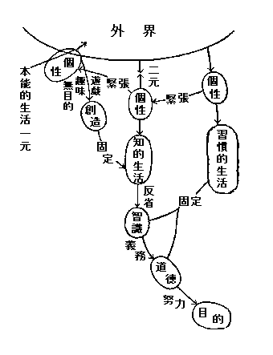

Sometimes with one I love, I fill myself with rage, for fear I effuse unreturn'd love;
But now I think there is no unreturn'd love―the pay is certain, one way or another;
(I loved a certain person ardently, and my love was not return'd;
Yet out of that, I have written these songs.)
［＃右寄せ］-- Walt Whitman --
I exist as I am―that is enough;
If no other in the world be aware, I sit content,
And if each and all be aware, I sit content.
One world is aware, and by far the largest to me, and that is myself;
And whether I come to my own to-day, or in ten thousand or ten million years,
I can cheerfully take it now, or with equal cheerfulness I can wait.
［＃右寄せ］-- Walt Whitman --
［＃改ページ］
太初に
道があったか
行があったか、私はそれを知らない。
然し誰がそれを知っていよう、私はそれを知りたいと
希う。そして誰がそれを知りたいと希わぬだろう。けれども私はそれを考えたいとは思わない。知る事と考える事との間には埋め得ない大きな
溝がある。人はよくこの溝を無視して、考えることによって知ることに達しようとはしないだろうか。私はその幻覚にはもう迷うまいと思う。知ることは出来ない。が、知ろうとは欲する。人は生れると直ちにこの「不可能」と「欲求」との間にさいなまれる。不可能であるという理由で私は欲求を
抛つことが出来ない。それは私として何という
我儘であろう。そして自分ながら何という
可憐さであろう。
太初の事は私の欲求をもってそれに私を結び付けることによって満足しよう。私にはとても目あてがないが、知る日の
来らんことを欲求して満足しよう。
私がこの奇異な世界に生れ出たことについては、そしてこの世界の中にあって今日まで生命を続けて来たことについては、私は
明かに知っている。この認識を誇るべきにせよ、恥ずべきにせよ、私はごまかしておくことが出来ない。私は私の生命を考えてばかりはいない。確かに知っている。哲学者が知っているように知っているのではないかも知れない。又深い生活の冒険者が知っているように知っているのではないかも知れない。然し私は知っている。この私の所有を他のいかなるものもくらますことは出来ない。又他のいかなる威力も私からそれを奪い取ることは出来ない。これこそは私の存在が所有する
唯一つの所有だ。
恐るべき
永劫が私の周囲にはある。永劫は恐ろしい。或る時には氷のように冷やかな、凝然としてよどみわたった或るものとして私にせまる。又或る時は眼もくらむばかりかがやかしい、瞬間も動揺流転をやめぬ或るものとして私にせまる。私はそのものの
隅か、中央かに落された点に過ぎない。広さと幅と高さとを点は持たぬと幾何学は私に教える。私は永劫に対して私自身を点に等しいと思う。永劫の前に立つ私は何ものでもないだろう。それでも点が存在する如く私もまた永劫の中に存在する。私は点となって生れ出た。そして
瞬く
中に跡形もなく永劫の中に溶け込んでしまって、私はいなくなるのだ。それも私は知っている。そして私はいなくなるのを恐ろしく思うよりも、点となってここに私が私として生れ出たことを恐ろしく思う。
然し私は生れ出た。私はそれを知る。私自身がこの事実を知る主体である以上、この私の生命は何といっても私のものだ。私はこの生命を私の思うように生きることが出来るのだ。私の唯一の所有よ。私は
凡ての懐疑にかかわらず、結局それを尊重
愛撫しないでいられようか。涙にまで私は自身を痛感する。
一人の旅客が永劫の道を行く。彼を彼自身のように知っているものは
何処にもいない。陽の照る時には、彼の忠実な
伴侶はその影であるだろう。空が曇り果てる時には、そして夜には、伴侶たるべき彼の影もない。その時彼は
独り彼の
衷にのみ忠実な伴侶を
見出さねばならぬ。
拙くとも、醜くとも、彼にとっては、彼以上のものを何処に求め得よう。こう私は自分を一人の旅客にして見る時もある。
私はかくの如くにして私自身である。けれども私の周囲に
在る人や物やは明かに私ではない。私が一つの言葉を申し出る時、私以外の誰が、そして何が、私がその言葉をあらしめるようにあらしめ得るか。私は周囲の人と物とにどう
繋がれたら正しい関係におかれるのであろう。
如何なる関係も可能ではあり得ないのか。可能ならばそれを私はどうして見出せばいいのか。誰がそれを私に教えてくれるのだろう。……結局それは私自身ではないか。
思えばそれは寂しい道である。最も無力なる私は私自身にたよる外の何物をも持っていない。自己に矛盾し、自己に
蹉跌し、自己に困迷する、それに何の不思議があろうぞ。私は時々私自身に対して神のように寛大になる。それは時々私の姿が、母を失った
嬰児の如く私の眼に映るからだ。嬰児は何処をあてどもなく
匍匐する。その姿は既に十分
憐れまれるに足る。嬰児は
屡
過って火に陥る、
若しくは水に
溺れる。そして
僅かにそこから
這い出ると、べそをかきながら又匍匐を続けて行く。このいたいけな姿を憐れむのを自己に
阿るものとのみ云い退けられるものであろうか。
縦令道徳がそれを自己
耽溺と
罵らば罵れ、私は自己に対するこの
哀憐の情を失うに忍びない。孤独な者は自分の
掌を見つめることにすら、熱い涙をさそわれるのではないか。
思えばそれは
嶮しい道でもある。私の主体とは私自身だと知るのは、私を極度に厳粛にする。他人に対しては与え得ないきびしい
鞭打を与えざるを得ないものは
畢竟自身に対してだ。誘惑にかかったように私はそこに導かれる。
笞にはげまされて振い立つ私を見るのも、打撲に抵抗し切れなくなって倒れ伏す私を見るのも、共に私が生きて行く上に、無くてはならぬものであるのを知る。その時に私は勇ましい。私の前には力一杯に生活する私の外には何物をも見ない。私は乗り越え乗り越え、自分の力に押され押されて未見の境界へと険難を侵して進む。そして如何なる生命の威脅にもおびえまいとする。その時傷の痛みは私に或る甘さを
味わせる。然しこの自己緊張の極点には往々にして恐ろしい自己疑惑が私を待ち設けている。遂に私は疲れ果てようとする。私の力がもうこの上には私を動かし得ないと思われるような瞬間が来る。私の唯一つの城廓なる私自身が見る見る
廃墟の姿を現わすのを見なければならないのは、私の眼前を暗黒にする。
けれどもそれらの不安や失望が常に私を脅かすにもかかわらず、
太初の何であるかを知らない私には、自身を
措いてたよるべき何物もない。凡ての矛盾と
渾沌との中にあって私は私自身であろう。私を実価以上に
値ぶみすることをしまい。私を実価以下に虐待することもしまい。私は私の正しい価の中にあることを勉めよう。私の価値がいかに低いものであろうとも、私の正しい価値の中にあろうとするそのこと自身は何物かであらねばならぬ。
縦しそれが何物でもないにしろ、その外に私の採るべき態度はないではないか。一個の金剛石を持つものは、その宝玉の正しい価値に
於てそれを持とうと願うのだろう。私の私自身は宝玉のように尊いものではないかも知れない。然し心持に於ては宝玉を持つ人の心持と少しも変るところがない。
私は私のもの、私のただ一つのもの。私は私自身を何物にも代え難く愛することから始めねばならない。
若し私のこの貧しい感想を読む人があった時、この出発点を首肯することが出来ないならば、私はその人に更にいい進むべき何物をも持ち得ない。太初が
道であるか
行であるかを（考えるのではなく）知り切っている人に取っては、この感想は無視さるべき無益なものであろう。私は自分が
極めて低い生活途上に立っているものであることをよく知りぬいている。ただ、今の私はそこに一番堅固な立場を持っているが故に、そこに立つことを恥じまいとするものだ。前にもいったように、私はより高い大きなものに対する欲求を
以て、知り得たる現在に安住し得るのを自己に感謝する。
私の言おうとする事が読者に十分の理解を与え得なくはないかと恐れる。人が人自身を言い現わすのは一番容易なことであらねばならぬ。何となれば、それはその人自身が最もよく知り抜いている
筈の事柄だから。
実際は然しそうではない。私達の用いている言葉は
謂わば
狼穽のようなものだ。それは獲物を取るには役立つけれども、私達自身に向っては妨げにこそなれ、役には立たない。
或は拡大鏡のようなものだ。私達はそれによって身外を見得るけれども、私達自身の顔を見ることは出来ない。或は又精巧な機械といってもよい。私達はそれによって有らゆるものを造り出し得るとしても、遂に私達自身を造り出すことは出来ない。
言葉は意味を表わす為めに案じ出された。然しそれは当初の目的から段々に堕落した。心の要求が言葉を
創った。然し今は物がそれを占有する。
吃る事なしには私達は自分の心を語る事が出来ない。恋人の耳にささやかれる言葉はいつでも
流暢であるためしがない。心から心に通う為めには、何んという不完全な乗り物に私達は乗らねばならぬのだろう。
のみならず言葉は不従順な
僕である。私達は屡
言葉の為めに裏切られる。私達の発した言葉は私達が針ほどの
誤謬を犯すや否や、すぐに
刃を
反えして私達に切ってかかる。私達は自分の言葉故に人の前に高慢となり、卑屈となり、
狡智となり、
魯鈍となる。
かかる言葉に依頼して私はどうして私自身を誤りなく云い現わすことが出来よう。私は
已むを得ず言葉に潜む暗示により多くの頼みをかけなければならない。言葉は私を言い現わしてくれないとしても、その後につつましやかに隠れているあの
睿智の
独子なる暗示こそは、裏切る事なく私を求める者に伝えてくれるだろう。
暗示こそは人に与えられた子等の中、最も
優れた娘の一人だ。然し彼女が慎み深く、穏かで、かつ容易にその
面紗を顔からかきのけない為めに、人は屡
この気高く美しい娘の存在を忘れようとする。
殊に近代の科学は何の容赦もなく、
如何なる場合にも抵抗しない彼女を、幽閉の憂目にさえ
遇わせようとした。抵抗しないという美徳を逆用して人は彼女を無視しようとする。
人間がどうしてか程優れた娘を生み出したかと私は驚くばかりだ。彼女は自分の美徳を認めるものが現われ出るまで、それを
沽ろうと企てたことが
嘗てない。沽ろうとした瞬間に美徳が美徳でなくなるという第一義的な真理を本能の如く知っているのは彼女だ。又正しく彼女を取り扱うことの出来ないものが、
仮初にも彼女に近づけば、彼女は見る見るそのやさしい存在から
萎れて行く。そんな人が彼女を捕え得たと思った時には、必ず美しい死を遂げたその
亡骸を抱くのみだ。粘土から創り上げられた人間が、どうしてかかる気高い娘を生み得たろう。
私は私自身を言い現わす為めに彼女に優しい助力を乞おう。私は自分の生長が彼女の柔らかな胸の中に抱かれることによって成就したのを経験しているから。しかし人間そのものの向上がどれ程彼女――人間の不断の無視にかかわらず――によって運ばれたかを知っているから。
けれども私は暗示に私を託するに当って私自身を恥じねばならぬ。私を最もよく知るものは私自身であるとは思うけれども、私の知りかたは余りに乱雑で不秩序だ。そして私は言葉の正当な使い道すらも十分には心得ていない。その言葉の後ろに安んじて巣喰うべき暗示の座が成り立つだろうかとそれを私は恐れる。
然し私は行こう。私に取って已み難き要求なる個性の表現の為めに、あらゆる
有縁の個性と私のそれとを結び付けようとする
厳しい欲求の為めに、私は
敢えて私から出発して歩み出して行こう。
私が餓えているように、或る人々は餓えている。それらの人々に私は私を与えよう。そしてそれらの人々から私も受取ろう。その為めには仮りに自分の引込思案を捨ててかかろう。許されるかぎりに於て大胆になろう。
私が知り得る可能性を存分に申し出して見よう。
唯この貧しい言葉の中から暗示が姿を隠してしまわない事を私は祈る。
神を知ったと思っていた私は、神を知ったと思っていたことを知った。私の動乱はそこから
芽生えはじめた。
或る人は私を偽善者ではないかと疑った。どうしてそこに疑いの余地などがあろう。私は明かに偽善者だ。明かに私は偽善者である。そう言明するのが、どれ程偽善的な行為であるぞとの非難が、当然
喚び起されるのを知らない私ではない。それにもかかわらず私は明かに偽善者であると言明せねばならぬ。私は
屡私自身に顧慮する以上に外界に顧慮しているからだ。それは悲しい事には私が弱いからだ。私は弱い者の有らゆる窮策によく通じている。
僅かな原因ですぐ陥った一つの小さな虚偽の
為めに、二つ三つ四つ五つと虚偽を重ねて行かねばならぬ、その苦痛をも知っている。弱いが故に
強いて自分を強く見せようとして、いつでも胸の中を
戦慄させていねばならぬ不安も知っている。苦肉の策から、自分の弱味を
殊更に捨て鉢に人の前にあらわに取り出して、不意に乗じて一種の尊敬を、そうでなければ一種の
憐憫を、
搾り取ろうとする
自涜も知っている。弱さは真に醜さだ。それを私はよく知っている。
然し偽善者とは弱いということばかりがその本質ではない。本当に弱いものは、その弱さから来る自分の醜さをも悲惨さをも意識しないが故に、その人はそのままの境地に満足することが出来よう。偽善者は不幸にしてただ弱いばかりでなく、その反面に多少の強さを持っている。彼は自分の弱味によって
惹き起した醜さ悲惨さを意識し得る強さをも持っているのだ。そしてその弱さを強さによって
弥縫しようとするのだ。
強者がその強味を知らず、弱味を知らない間に、偽善者はよくその強味と弱味とを知っている。人はいうだろう、偽善者の本質は、強味を
以て弱味を弥縫するばかりでなく、その弥縫に無恥な安住を
敢てする点にあると。だから偽善者は救わるることが出来ないのだと。こう云って聞かされると私は偽善者の為めに弁解をしないではいられない心持になる。私自身が偽善者であるが故に自分自身の為めに弁解しようとするだけではない。偽善者そのものになり代って、偽善者の一人なる私が、義人に申し出たいと思わずにはいられないのだ。
何事にも例外はある。その例外を殊更に色濃く描くのをひかえて見て貰ったら、偽善者というものが、強味を以て弱味を弥縫するところに無恥な安住をしているというのは、少しさばけ過ぎた見方だとは云われまいか。私は義人が次の点に於て偽善者を信じていただきたいと思う。それは偽善者もまた心
窃かに苦しんでいるという一事だ。考えて見てもほしい。多少の強さと弱さとを同時に持ち合わしているものが、二つの力の矛盾を感じないでいられようか。矛盾を感じながら平然としてそこに無恥の安住をのみ続けていることが出来ようか。
偽善者よ、お前は全くひどい目に遇わされた。それは当然な事だ。お前は本当に不愉快な人間だから。お前はいつでも然り然り否々といい切ることが出来ないから。
毎時でもお前には陰険なわけへだてが附きまつわっているから。お前は憎まれていい。
辱しめられていい。悪魔視されていい。然しお前の心の隅の人知れぬ苦痛をそっと
眺めてやる人はないのか。お前が人並に見られたい為めに、お前自身にさえ隠そうと企てているその人知れぬ苦痛を
一寸でも暖かく
触ろうという人はないのか。偽善者よ、私は自身偽善者であるが故によくそれを知っている。義人のすぐ隣に住むと考えられている
罪人（己れの罪を知ってそれを悲しむ人）は自分の強味と弱味との矛盾を声高く叫び得る幸福な人達なのだ。罪人の持つものも偽善者の持つものも畢竟は同じなのだ。ただ罪人は叫ぶ。それを神が聞く。偽善者は叫ぼうとする程に強さを持ち合わしていない。故に神は聞かない。それだけの差だと私には思える。よきサマリヤ人と
悪しきサドカイ人とは、隣り合せに住んでいるのではないか。偽善者なる私は屡
他人を偽善者と呼んだ。今にして私はそれを悲しく思う。何故に私は人と人との
距てをこんなに大きくしようとはしたろう。
こう云ったとて私は、世の義人に偽善者を
裁く手心をゆるめて貰いたいと歎願するのではない。偽善者は何といっても義人からきびしく裁かれるふしだらさを持っている。私はただ偽善者もその心の片隅には人に示すのを敢てしない苦痛を持っているという事を知って貰えばいいのだ。それが私の弁解なのだ。
私もその苦痛は持っていた。人の前に私を私以上に立派に見せようとする
虚妄な心は有り余るほど持っていたけれども、そこに埋めることの出来ない苦痛をも全く失ってはいなかった。そして或る時には、
烏が
鵜の
真似をするように、罪人らしく自分の罪を
上辷りに人と神との前に
披露もした。私は私らしく神を求めた。どれ程完全な罪人の形に於て私はそれをなしたろう。恐らく私は誰の眼からも立派な罪人のように見えたに違いない。私は断食もした、不眠にも陥った、
痩せもした。一人の女の肉をも犯さなかった。或る時は神を見出だし得んためには、自分の生命を好んで断つのを意としなかった。
他人眼から見て相当の
精進と思われるべき私の生活が幾百日か続いた後、私は或る決心を以て神の
懐に飛び入ったと実感のように空想した。弱さの醜さよ。私はこの大事を見事に空想的に実行していた。
そして私は完全にせよ、不完全にせよ、
甦生していたろうか。復活していたろうか。神によって罪の根から切り放された約束を与えられたろうか。
神の懐に飛び入ったと空想した瞬間から、私が格段に
瑕瑾の少い生活に入ったことはそれは確かだ。私が隣人から模範的の青年として取り扱われたことは、私の誇りとしてではなく、私のみじめな
懺悔としていうことが出来る。
けれども私は本当は神を知ってはいなかったのだ。神を知り神によりすがると宣言した手前、強いて私の言行をその宣言にあてはめていたに過ぎなかったのだ。それらが如何に弱さの生み出す空想によって色濃く
彩られていたかは、私が見事に人の眼をくらましていたのでも察することが出来る。
この時
若し私に人の眼の前に罪を犯すだけの強さがあったなら、即ち私の顧慮の対象なる外界と私とを絶縁すべき事件が起ったら、私は偽善者から一躍して正しき意味の罪人になっていたかも知れない。私は自分の罪を真剣に叫び出したかも知れない。そしてそれが恐らくは神に聞かれたろう。然し私はそうなるには余りに弱かった。人はこの場合の私を余り強過ぎたからだといおうとするかも知れない。若しそういう人があるなら、私は明かにそれが誤謬であるのを自分の経験から断言することが出来る。本当に罪人となり切る為めには、自分の
凡てを
捧げ果てる為めには、私の想像し得られないような強さが必要とせられるのだ。このパラドックスとも見れば見える申し
出では決して虚妄でない。罪人のあの柔和なレシグネーションの中に、
昂然として何物にも屈しまいとする強さを私は明かに見て取ることが出来る。神の信仰とは強者のみが
与かり得る貴族の
団欒だ。私は
羨しくそれを眺めやる。然し私には、その入場券は与えられていない。私は単にその
埓外にいて貴族の
物真似をしていたに過ぎないのだ。
基督の教会に於て、私は明かに偽善者の一群に属すべきものであるのを見出してしまった。
砂礫のみが砂礫を知る。金のみが金を知る。これは悲しい事実だ。偽善者なる私の眼には、自ら教会の中の偽善の分子が見え透いてしまった。こんな事を書き進むのは、
殆ど私の
堪え得ないところだ。私は余りに自分を裸にし過ぎる。然しこれを書き抜かないと、私のこの拙い感想の筆は
放げ棄てられなければならない。本当は私も強い人になりたい。そして教会の中に強さが生み出した真の生命の多くを尊く拾い上げたい。私は近頃或る尊敬すべき老学者の感想を読んだが、その中に宗教に身をおいたものが、それを捨てるというようなことをするのは、如何にその人の性格の高貴さが足らないかを現わすに過ぎないということが強い語調で書かれているのを見た。私はその老学者に深い尊敬を払っているが故に、そして氏の生得の高貴な性格を知っているが故に、その言葉の
空しい
罵詈でないのを感じて私自身の
卑陋を悲しまねばならなかった。氏が凡ての虚偽と堕落とに飽満した基督旧教の中にありながら、根ざし深く潜在する尊い要素に自分のけだかさを化合させて、
巌のように堅く立つその態度は、私を驚かせ羨ませる。私は全くそれと反対なことをしていたようだ。私は自分が卑陋であるが故に、多くの卑陋なものを見てしまった。私はそれを悲しまねばならない。
然し私は自分の卑陋から、周囲に卑陋なものを見出しておきながら、高貴な性格の人があるように、それを見ないでいることはさすがに出来なかった。卑陋なものを見出しながら、しらじらしく見ない振りをして、寛大にかまえていることは出来なかった。その程度までの偽善者になるには、私の強味が弱味より多過ぎたのかも知れない。そして私は、自分の偽善が私の属する団体を汚さんことを恐れて、そして団体の悪い方の分子が私の心を苦しめるのを
厭って、その団体から逃げ出してしまった。私の卑陋はここでも私に卑陋な行いをさせた。私の属していた団体の言葉を借りていえば、私の
行の
根柢には大それた高慢が働いていたと云える。
けれども私は小さな声で私にだけ
囁きたい。心の奥底では、私はどうかして私を偽善者から更に偽善者に導こうとする誘因を避けたい気持がないではなかったということを。それを突き破るだけの強さを持たない私はせめてはそれを避けたいと念じていたのだ。前にもいったように外界に支配され
易い私は、手厳しい外界に囲まれていればいる程、自分すら思いもかけぬ偽善を重ねて行くのに気づき、そしてそれを心から恐れるようになってはいたのだ。だから私は私の属していた団体を退くと共に、それまで指導を受けていた先輩達との直接の接触からも遠ざかり始めた。
偽善者であらぬようになりたい。これは私として過分な欲求であると見られるかも知れないけれども、偽善者は凡て、偽善者でなかったらよかろうという心持を何処かの
隅に隠しながら持っているのだ。私も少しそれを持っていたばかりだ。
義人、偽善者、罪人、そうした名称が可なり判然区別されて、それがびしびしと人にあてはめられる社会から私が離れて行ったのは、結局悪いことではなかったと私は今でも思っている。
神を知ったと思っていた私は、神を知ったと思っていたことを知った。私の動乱はそこから芽生えはじめた。その動乱の中を私はそろそろと自分の方へと帰って行った。目指す故郷はいつの間にか
遙に
距ってしまい、そして私は屡
蹉いたけれども、それでも動乱に動乱を重ねながらそろそろと故郷の方へと帰って行った。
長い廻り道。
その長い廻り道を短くするには、自分の生活に対する不満を本当に感ずる外にはない。生老病死の諸苦、性格の欠陥、あらゆる失敗、それを十分に
噛みしめて見ればそれでいいのだ。それは
然し
如何に言説するに易く実現するに難き事柄であろうぞ。私は幾度かかかる悟性の幻覚に迷わされはしなかったか。そしてかかる悟性と見ゆるものが、実際は既定の概念を尺度として測定されたものではなかったか。私は
稀にはポーロのようには
藻掻いた。然し私のようには藻掻かなかった。
親鸞のようには悟った。然し私のようには悟らなかった。それが一体何になろう。これほど体裁のいい
外貌と、内容の空虚な実質とを併合した心の状態が外にあろうか。この近道らしい迷路を避けなければならないと知ったのは、長い
彷徨を続けた後のことだった。それを知った後でも、私はややもすればこの
忌わしい袋小路につきあたって、すごすごと引き返さねばならなかった。
私は自分の個性がどんなものであるかを知りたいために、他人の個性に触れて見ようとした。歴史の中にそれを見出そうと勉めたり、芸術の中にそれを見出そうと試みたり、隣人の中にそれを見出そうと求めたりした。私は多少の知識は得たに違いなかった。私の個性の輪廓は、おぼろげながら私の眼に映るように思えぬではなかった。然しそれは結局私ではなかった。
物を見る事、物をそれ自身の生命に於てあやまたず捕捉する事、それは私が考えていたように容易なことではない。それを成就し得た人こそは世に
類なく幸福な人だ。私は見ようと欲しないではなかった。然し見るということの本当の意味を
弁えていたといえようか。
掴み得たと思うものが
暫くするといつの間にか影法師に過ぎぬのを発見するのは
苦い味だ。私は自分の心を
沙漠の砂の中に眼だけを埋めて、猟人から己れの姿を隠し
終せたと信ずる
駝鳥のようにも思う。駝鳥が一つの機能の働きだけを隠すことによって、全体を隠し得たと思いこむのと反対に、私は一つの機能だけを働かすことによって、私の全体を働かしていると信ずることが屡
ある。こうして
眺められた私の個性は、整った矛盾のない姿を私に描いて見せてくれるようだけれども、見ている中にそこには何等の生命もないことが明かになって来る。それは感激なくして書かれた詩のようだ。又着る人もなく
裁たれた
錦繍のようだ。美しくとも、価高くあがなわれても、有りながら有る
甲斐のない
塵芥に過ぎない。
私が私自身に帰ろうとして、外界を機縁にして私の
当体を築き上げようとした試みは、
空しい失敗に終らねばならなかった。
聡明にして上品な人は屡
仮象に満足する。満足するというよりは、人の現象と
称えるものも、人の実在と称えるものも、
畢竟は意識の――それ自身が仮象であるところの――
仮初めな遊戯に過ぎないと傍観する。そこに何等かの執着をつなぎ、葛藤を加えるのは、要するに下根
粗笨な外面的見断に支配されての迷妄に過ぎない。それらの境を静かに超越して、嬰児の戯れを見る老翁のように
凡ての努力と
蹉跌との上に、淋しい微笑を送ろうとする。そこには冷やかな、然し皮相でない上品さが漂っている。或は又凡てを
容れ凡てを抱いて、飽くまで外界の
跳梁に身を任かす。昼には歓楽、夜には遊興、身を凡俗非議の外に置いて、死にまでその
恣まな姿を変えない人もある。そこには皮肉な、然し熱烈な聡明が
窺われないではない。私はどうしてそれらの人を
弾劾することが出来よう。果てしのない迷執にさまよわねばならぬ人の宿命であって見れば、各
の瞬間をただ楽しんで生きる外に残される何事があろうぞとその人達はいう。その心持に対して私は白眼を向けることが出来るか。私には出来ない。人は或はかくの如き人々を酔生夢死の徒と呼んで
唾棄するかも知れない。然し私にはその人々の
何処かに私を
牽き付ける或るものが感ぜられる。私には生来持ち合わしていない或る上品さ、或る聡明さが窺われるからだ。
何という多趣多様な生活の相だろう。それはそのままで尊いではないか。そのままで完全な自然な姿を見せているではないか。若し自然にあの
絢爛な多種多様があり、
独り人間界にそれがなかったならば、宇宙の美と真とはその時に崩れるといってもいいだろう。主義者といわれる人の心を私はこの点に於てさびしく物足らなく思う。彼は自分が授かっただけの天分を
提げて人間全体をただ一つの色に塗りつぶそうとする人ではないか。その意気の尊さはいうまでもない。然しその尊さの蔭には尊さそのものをも
冰らせるような淋しさが潜んでいる。
ただ私は私自身を私に
恰好なように守って行きたい。それだけは私に許される事だと思うのだ。そしてその立場からいうと私はかの聡明にして上品な人々と同情の人であることが出来ない。私にはまださもしい未練が残っていて、凡てを仮象の戯れだと見て心を安んじていることが出来ない。そこには上品とか聡明とかいうことから
遙かに遠ざかった多くの vulgarity が残っているのを私自身よく承知している。私は全く
凡下な執着に駆られて
齷齪する
衆生の一人に過ぎない。ただ私はまだその境界を捨て切ることが出来ない。そして捨て切ることの出来ないのを悪いことだとさえ思わない。漫然と私自身を他の境界に移したら、即ち私の個性を本当に知ろうとの要求を
擲ったならば、私は今あるよりもなお多くの不安に責められるに違いないのだ。だから私は依然として私自身であろうとする衝動から離れ去ることが出来ない。
外界の機縁で私を
創り上げる試みに失敗した私は、更に立ちなおって、私と外界とを等分に向い合って立たせようとした。
私がある。そして私がある以上は私に対立して外界がある。外界は私の内部に明かにその影を投げている。従って私の心の働きは二つの極の間を往来しなければならない。そしてそれが何故悪いのだ。私はまだどんな言葉で、この二つの極の名称をいい現わしていいか知らない。然しこの二つの極は昔から色々な名によって呼ばれている。
希臘神話ではディオニソスとアポロの名で、又欧洲の思潮ではヘブライズムとヘレニズムの名で、仏典では色相と空相の名で、或は唯物唯心、或は個人社会、或は主義趣味、……凡て世にありとあらゆる名詞に対を成さぬ名詞はないと
謂ってもいいだろう。私もまたこのアンティセシスの下にある。自分が思い切って一方を取れば、是非退けねばならない他の一方がある。ジェーナスの顔のようにこの二つの極は
渾融を許さず相
反いている。然し私としてはその二つの
何れをも
潔く捨てるに忍びない。私の生の欲求は思いの外に強く深く、何者をも失わないで、凡てを味い尽して墓場に行こうとする。
縦令私が純一
無垢の生活を成就しようとも、この存在に属するものの中から何かを捨ててしまわねばならぬとなら、それは私には堪え得ぬまでに淋しいことだ。よし私は矛盾の中に住み通そうとも、人生の味いの凡てを味い尽さなければならぬ。相反して見ゆる二つの極の間に
彷徨うために、内部に必然的に起る不安を得ようとも、それに忍んで両極を恐れることなく掴まねばならぬ。
若しそれらを掴むのが不可能のことならば、公平な観察者鑑賞者となって、両極の持味を
髣髴して死のう。
人間として持ち得る最大な特権はこの外にはない。この特権を捨てて、そのあとに残されるものは、捨てるにさえ値しない枯れさびれた残り
滓のみではないか。
けれども私はそこにも満足を得ることが出来なかった。私は思いもよらぬ物足らぬ発見をせねばならなかった。両極の観察者になろうとした時、私の力はどんどん私から
遁れ去ってしまったのだ。実験のみをしていて、経験をしない私を
見出した時、私は何ともいえない空虚を感じ始めた。私が触れ得たと思う
何れの極も、共に私の命の
糧にはならないで、
何処にまれ動き進もうとする力は姿を隠した。私はいつまでも一箇所に立っている。
これは私として極端に堪えがたい事だ。かのハムレットが感じたと思われる空虚や頼りなさはまた私にも存分にしみ通って、私は始めて主義の人の心持を察することが出来た。あの人々は生命の空虚から救い出されたい為めに、他人の自由にまで踏み込んでも、力の限りを一つの極に向って用いつつあるのだ。それは或る場合には他人にとって迷惑なことであろうとも、その人々に取っては致命的に必要なことなのだ。主義の為めには生命を捨ててもその生命の緊張を保とうとするその心持はよく解る。
然しながら私には生命を
賭しても主張すべき主義がない。主義というべきものはあるとしても、それが為めに私自身を見失うまでにその為めに没頭することが出来ない。
やはり私はその長い廻り道の後に私に帰って来た。然し何というみじめな情ない私の姿だろう。私は凡てを捨ててこの私に頼らねばならぬだろうか。私の過去には何十年の遠きにわたる歴史がある。又私の身辺には有らゆる社会の活動と
優れた人間とがある。大きな力強い自然が私の周囲を
十重二十重に取り巻いている。これらのものの絶大な重圧は、この
憐れな私をおびえさすのに十分過ぎる。私が今まで自分自身に帰り得ないで、有らん限りの
躊躇をしていたのも、思えばこの外界の威力の前に私自身の無為を感じていたからなのだ。そして何等かの手段を
運らしてこの絶大の威力と調和し若しくは妥協しようとさえ試みていたのだった。しかもそれは私の場合に於ては凡て失敗に終った。そういう試みは一時的に多少私の不安を
撫でさすってくれたとしても、更に深い不安に導く
媒になるに過ぎなかった。私はかかる試みをする始めから、何かどうしてもその境遇では満足し得ない予感を持ち、そしてそれがいつでも事実になって現われた。私はどうしてもそれらのものの前に at home に自分自身を感ずることが出来なかった。
それは私が大胆でかつ誠実であったからではない。偽善者なる私にも少しばかりの誠実はあったと云えるかも知れない。けれど少くとも大胆ではなかった。私は弱かったのだ。
誰でも弱い人がいかなる心の状態にあるかを知っている。何物にも信頼する事の出来ないのが弱い人の特長だ。しかも何物にか信頼しないではいられないのが他の特長だ。
兎は弱い動物だ。その耳はやむ時なき
猜疑に震えている。彼は
頑丈な
石窟に身を託する事も、
幽邃な深林にその住居を構えることも出来ない。彼は小さな
藪の中に彼らしい穴を掘る。そして雷が鳴っても、雨が来ても、風が吹いても、犬に追われても、猟夫に迫られても、逃げ廻った後にはそのみじめな、
壊れ易い土の穴に最後の隠れ家を求めるのだ。私の心もまた兎のようだ。大きな威力は無尽蔵に周囲にある。然し私の
怯えた心はその何れにも無条件的な信頼を持つことが出来ないで、
危懼と躊躇とに満ちた彷徨の果てには、我ながら憐れと思う自分自身に帰って行くのだ。
然し私はこれを弱いものの強味と呼ぶ。何故といえば私の生命の一路はこの極度の弱味から
徐ろに育って行ったからだ。
ここまで来て私は自ら任じて強しとする人々と
袖を別たねばならぬ。その人々はもう私に
呆れねばならぬ時が来た。私はしょうことなしに弱さに純一になりつつ、益
強い人々との交渉から身を退けて行くからだ。ニイチェは弱い人だった。彼もまた弱い人の通性として頑固に自分に執着した。そこから彼の超人の哲学は生れ出たが、そしてそれは強い人に恰好な背景を与える結果にはなったが、それを解して彼が強かったからだと思うのは大きな錯誤といわねばならぬ。ルッソーでもショーペンハウエルでも等しくそうではなかったか。強い人は幸にして偉人となり、義人となり、君子となり、節婦となり、忠臣となる。弱い人はまた幸にして一個の尋常な人間となる。それは人々の好き好きだ。私は弱いが故に後者を選ぶ
外に
途が残されていなかったのだ。
運命は畢竟不公平であることがない。彼等には彼等のものを与え、私には私のものを与えてくれる。しかも両者は一度は相失う程に分れ別れても、
何時かは何処かで十字路頭にふと
出遇うのではないだろうか。それは然し私が顧慮するには及ばないことだ。私は私の道を
驀地に走って行く外はない。で、私は更にこの筆を続けて行く。
私の個性は私に告げてこう云う。
私はお前だ。私はお前の精髄だ。私は肉を離れた一つの概念の幽霊ではない。また霊を離れた一つの肉の盲動でもない。お前の外部と内部との溶け合った一つの全体の中に、お前がお前の存在を
有っているように、私もまたその全体の中で
厳しく働く力の総和なのだ。お前は地球の地殻のようなものだ。千態万様の相に分れて、地殻は目まぐるしい変化を現じてはいるが、
畢竟そこに見出されるものは、静止であり、結果であり、死に近づきつつあるものであり、奥行のない現象である。私は
謂わば地球の外部だ。単純に見るとそこには
渾沌と単一とがあるばかりとも思われよう。けれどもその実質をよく考えてみると、それは他の星の世界と同じ実質であり、その中に潜む力は一瞬時にして、地殻を思いのままに破壊することも出来、新たに地表を生み出すことも出来るのだ。私とお前とは或る意味に
於て同じものだ。然し他の意味に於て較べものにならない程違ったものだ。地球の内部は外部からは見られない。外部から見て、一番よく気のつく所は何といっても表面だ。だから人は私に注意せずに、お前ばかりを見て、お前の全体だと
窺っているし、お前もまたお前だけの姿を見て、私を顧みず、恐れたり、迷ったり、臆したり、外界を見るにもその表面だけを伺って満足している。私に帰って来ない前にお前が見た外界の姿は誠の姿ではない。お前は私が如何なるものであるかを本当に知らない間は、お前の外界を見る眼はその正しい機能を失っているのだ。それではいけない。そんなことでは
縦令お前がどれ程
齷齪して進んで行こうとも、急流を
遡ろうとする
下手な泳手のように、無益に
藻掻いてしかも一歩も進んではいないのだ。地球の内部が残っていさえすれば、縦令地殻が跡形なく
壊れてしまっても、一つの遊星としての存在を続ける事が出来るのだ。然し内部のない地球というものは想像して見ることも出来ないだろう。それと同じに私のないお前は想像することが出来ないのだ。
お前に取って私以上に完全なものはない。そういったとて、その意味は、世の中の人が概念的に案出する神や仏のように、完全であろうというのではない。お前が今まで、宗教や、倫理や、哲学や、文芸などから提供せられた想像で測れば、
勿論不完全だということが出来るだろう。成程私は悪魔のように恥知らずではないが、又天使のように清浄でもない。私は人間のように人間的だ。私の今のこの瞬間の誇りは、全力を挙げて何の躊躇もなく人間的であるということに帰する。私の所に悪魔だとか天使だとか、お前の頭の中で、こね上げた偶像を持って来てくれるな。お前が生きなければならないこの現在にとって、それらのものとお前との間には無益有害な広い距離が
挾まっている。
お前が私の極印を押された許可状を持たずに、霊から引放した肉だけにお前の身売りをすると、そこに実質のない悪魔というものが、さも
厳めしい実質を備えたらしく立ち現われるのだ。又お前が肉から
強いて引き離した霊だけに身売りをすると、そこに実質のない天使というものが、さも厳めしい実質を備えたらしく立ち現われるのだ。そんな事をしてる
中に、お前は段々私から離れて行って、実質のない幻影に捕えられ、そこに、奇怪な空中楼閣を描き出すようになる。そして、お前の
衷には苦しい二元が
建立される。霊と肉、天国と地獄、天使と悪魔、それから何、それから何……対立した観念を持ち出さなければ何んだか安心が出来ない、そのくせ観念が対立していると何んだか安心が出来ない、両
天秤にかけられたような、底のない空虚に浮んでいるような不安がお前を襲って来るのだ。そうなればなる程お前は私から遠ざかって、お前のいうことなり、思うことなり、実行することなりが、一つ残らず外部の力によって支配されるようになる。お前には及びもつかぬ理想が出来、良心が出来、道徳が出来、神が出来る。そしてそれは、皆私がお前に命じたものではなくて、外部から借りて来たものばかりなのだ。そういうものを振り廻して、お前はお前の
寄木細工を造り始めるのだ。そしてお前は一面に、悪魔でさえが眼を
塞ぐような醜い
賤しい思いをいだきながら、人の眼につく所では、しらじらしくも自分でさえ恥かしい程立派なことをいったり、立派なことを
行ったりするのだ。しかもお前はそんな
蔑むべきことをするのに、
尤もらしい理由をこしらえ上げている。聖人や英雄の
真似をするのは――も少し聞こえのいい言葉
遣いをすれば――聖人や英雄の言行を学ぶのは、やがて聖人でもあり英雄でもある素地を造る第一歩をなすものだ。我れ、
舜の言を言い、舜の行を行わば、
即ち舜のみというそれである。かくして、お前は心の
隅に容易ならぬ矛盾と、不安と、情なさとを感じながら、
益高く
虚妄なバベルの塔を登りつめて行こうとするのだ。
悪いことには、お前のそうした態度は、社会の習俗には都合よくあてはまって行く態度なのだ。人間の生活はその欲求の奥底には必ず生長という大事な因子を持っているのだけれども、社会の習俗は平和――平和というよりも単なる無事に執着しようとしている。何事もなく昨日の生活を今日に
繋ぎ、今日の生活を明日に延ばすような生活を最も面倒のない生活と思い、そういう無事の日暮しの中に、一日でも安きを
偸もうとしているのだ。これが社会生活に強い惰性となって
膠着している。そういう生活態度に適応する為めには、お前のような行き方は大変に都合がいい。お前の内部にどれ程の矛盾があり表裏があっても、それは習俗的な社会の
頓着するところではない。単にお前が殊勝な言行さえしていれば、社会は無事に治まって泰平なのだ。社会はお前を
褒めあげて、お前に、お前が心
窃かに恥じねばならぬような過大な報償を贈ってよこす。お前は腹の中で心苦しい苦笑いをしながらも、その過分な報償に報ゆるべく益
私から遠ざかって、心にもない犬馬の労を尽しつつ身を終ろうとするのだ。
そんなことをして、お前が外部の圧迫の下に、虚偽な生活を続けている間に、何時しかお前は私をだしぬいて、思いもよらぬ聖人となり英雄となりおおせてしまうだろう。その時お前はもうお前自身ではなくなって、即ち一個の人間ではなくなって、人間の皮を
被った専門家になってしまうのだ。仕事の上の専門家を私達は尊敬せねばならぬ。然し生活の習俗性の要求にのみ耳を傾けて、自分を置きざりにして、外部にのみ身売りをする専門家は、既に人間ではなくして、いかに立派でも、立派な一つの機械にしか過ぎない。
いかにさもしくとも力なくとも人間は人間であることによってのみ尊い。人間の有する尊さの中、この尊さに
優る尊さを何処に求め得よう。この尊さから退くことは、お前を死滅に導くのみならず、お前の奉仕しようとしている社会そのものを死滅に導く。何故ならば人間の社会は生きた人間に依ってのみ造り上げられ、維持され、存続され、発達させられるからだ。
お前は機械になることを恥じねばならぬ。若し
聊かでもそれを恥とするなら、そう軽はずみな先き走りばかりはしていられない
筈だ。外部ばかりに気を取られていずに、少しは
此方を向いて見るがいい。そして本当のお前自身なるお前の個性がここにいるのを思い出せ。
私を見出したお前は先ず失望するに違いない、私はお前が夢想していたような立派な姿の持主ではないから。お前が外部的に教え込まれている理想の
物指にあてはめて見ると、私はいかにも物足らない存在として映るだろう。私はキャリバンではない代りにエーリヤルでもない。悪魔ではない代りに天使でもない。私にあっては霊肉というような区別は全く無益である。また善悪というような差別は全く不可能である。私は凡ての活動に於て、全体として生長するばかりだ。花屋は花を珍重するだろう。果物屋は果実を珍重するだろう。建築家はその幹を珍重するだろう。然し桜の木自身にあっては、かかる善悪差別を絶したところにただ生長があるばかりだ。然し私の生長は、お前が思う程
迅速なものではない。私はお前のように頭だけ大きくしたり、
手脚だけ延ばしたりしただけでは満足せず、その全体に於て動き進まねばならぬからだ。理想という疫病に犯されているお前は、私の歩き方をもどかしがって、生意気にも私をさしおいて、外部の要求にのみ応じて、先き走りをしようとするのだ。お前は私より早く走るようだが、畢竟は遅く走っているのだ。何故といえば、お前が私を出し抜いて、外部の
刺戟ばかりに身を任せて走り出して、何処かに行き着くことが出来たとしても、その時お前は既に人間ではなくなって、一個の専門家即ち非情の機械になっているからだ。お前自身の面影は段々淡くなって、その淡くなったところが、聖人や英雄の
襤褸布で、つぎはぎになっているからだ。その醜い姿をお前はいつしか発見して後悔せねばならなくなる。後悔したお前はまたすごすごと私の所まで後戻りするより外に道がないのだ。
だからお前は私の全支配の下にいなければならない。お前は私に抱擁せられて歩いて行かなければならない。
個性に立ち帰れ。今までのお前の名誉と、功績と、誇りとの凡てを捨てて私に立ち帰れ。お前は生れるとから外界と接触し、外界の要求によって育て上げられて来た。外界は
謂わばお前の皮膚を包む皮膚のようになっている。お前の個性は分化拡張して、しかも
稀薄な内容になって、中心から外部へ散漫に流出してしまった。だからお前が、私を出し抜いて先き走りをするのも一面からいえば無理のないことだ。そしてお前は私に相談もせずに、愛のない時に、愛の
籠ったような行いをしたり、憎しみを心の中に燃やしながら、寛大らしい振舞いをしたりしたろう。そしてそんな浮薄なことをする結果として、不可避的に心の中に
惹き起される不愉快な感じを、お前は努力に伴う自らの感じと
強いて思いこんだ。お前の感情を訓練するのだと思った。そんな風にお前が私と没交渉な愚かなことをしている間は、
縦令山程の仕事をし遂げようとも、お前自身は寸分の生長をもなし得てはいないのだ。そしてこの浅ましい行為によってお前は本当の人間の生活を阻害し、生命のない生活の残り
滓を、いやが上に人生の路上に
塵芥として積み上げるのだ。花屋の為めに一本の桜の樹は花ばかりの生存をしていてもいいかも知れない。その結果それが枯れ果てたら、花屋は遠慮なくその幹を切り倒して他の苗木を植えるだろうから。然し人間の生活の中に在る一人の人間はかくあってはならない。その人間が個性を失うのは、取りもなおさず社会そのものの生命を弱めることだ。
お前も一度は信仰の門をくぐったことがあろう。人のすることを自分もして見なければ、何か物足りないような淋しさから、お前は宗教というものにも指を染めて見たのだ。お前が知るであろう通りに、お前の個性なる私は、渇仰的という点、即ち生長の欲求を
烈しく
抱いている点では、宗教的ということが出来る。然し私はお前のような浮薄な歩き方はしない。
お前は私のここにいるのを
碌々顧みもせずに、習慣とか軽い誘惑とかに引きずられて、
直ぐに友達と、聖書と、教会とに走って行った。私は深い
危懼を以てお前の例の先き走りを見守っていた。お前は例の如く努力を始めた。お前の努力から受ける感じというのは、柄にもない飛び上りな行いをした後に
毎時でも残される苦しい後味なのだ。お前は一方に崇高な告白をしながら、
基督のいう意味に於て、
正しく盗みをなし、
姦淫をなし、人殺しをなし、偽りの
祈祷をなしていたではないか。お前の行いが
疚ましくなると「人の義とせらるるは信仰によりて、律法の行いに依らず」といって、乞食のように、神なるものに情けを乞うたではないか。又お前の信仰の虚偽を
発かれようとすると「主よ主よというもの
悉く天国に入るにあらず、吾が天に
在す神の旨に
遵るもののみなり」といってお前を弁護したではないか。お前の神と称していたものは、畢竟するに極く
幽かな私の影に過ぎなかった。お前は私を出し抜いて宗教生活に
奔っておきながら、お前の信仰の対象なる神を、私の姿になぞらえて造っていたのだ。そしてお前の生活には本質的に何等の変化も
来さなかった。若し変化があったとしても、それは表面的なことであって、お前以外の力を天啓としてお前が感じたことなどはなかった。お前は強いて頭を働かして神を想像していたに過ぎないのだ。即ちお前の最も表面的な理智と感情との作用で、かすかな私の姿を神にまで
捏ねあげていたのだ。お前にはお前以外の力がお前に加わって、お前がそれを避けるにもかかわらず、その力によって奮い
起たなければならなかったような経験は一度もなかったのだ。それだからお前の祈りは、空に向って投げられた石のように、冷たく、力なく、再びお前の上に落ちて来る外はなかったのだ。それらの
苦々しい経験に苦しんだにもかかわらず、お前は
頑固にもお前自身を欺いて、それを精進と思っていた。そしてお前自身を欺くことによって他人をまで欺いていた。
お前はいつでも心にもない言行に、美しい名を与える詐術を用いていた。然しそれに飽き足らず思う時が遂に来ようとしている。まだいくらか誠実が残っていたのはお前に取って何たる幸だったろう。お前は絶えて久しく捨ておいた私の方へ顔を向けはじめた。今、お前は、お前の行為の大部分が虚偽であったのを認め、またお前は真の意味で、一度も祈祷をしたことのない人間であるのを知った。これからお前は前後もふらず、お前の個性と合一する為めにいそしまねばならない。お前の個性に生命の泉を見出し、個性を
礎としてその上にありのままのお前を築き上げなければならない。
私の個性は更に私に告げてこう云う。
お前の個性なる私は、私に即して行くべき道のいかなるものであるかを説こうか。
先ず何よりも先に、私がお前に要求することは、お前が
凡ての外界の標準から眼をそむけて、私に帰って来なければならぬという一事だ。恐らくはそれがお前には頼りなげに思われるだろう。外界の標準というものは、古い人類の歴史――その中には凡ての偉人と凡ての聖人とを含み、凡ての哲学と科学、凡ての文化と進歩とを蓄えた宏大もない貯蔵場だ――と、現代の人類活動の諸相との集成から成り立っている。それからお前が全く眼を退けて、私だけに注意するというのは、
便りなくも心細くも思われることに違いない。然し私はお前に云う。
躊躇するな。お前が外界に向けて拡げていた
鬚根の凡てを抜き取って、先を
揃えて私の中に

し入れるがいい。お前の個性なる私は、多くの人の個性に比べて見たら、卑しく劣ったものであろうけれども、お前にとっては、私の外に
より完全なものはないのだ。
かくてようやく私に帰って来たお前は、これまでお前が外界に対してし慣れていたように、私を勝手次第に切りこまざいてはならぬ。お前が外界と交渉していた時のように、善悪美醜というような見方で、
強いて私を理解しようとしてはならぬ。私の要求をその統合のままに受け入れねばならぬ。お前が私の全要求に応じた時に於てのみ私は生長を遂げるであろう。私はお前が従う為めに結果される思想なり言説なり行為なりが、仮りに外界の伝説、習慣、教訓と衝突矛盾を
惹き起すことがあろうとも、お前は決して心を乱して、私を疑うようなことをしてはならぬ。急がず、
躊らわず、お前の個性の生長と完成とを心がけるがいい。然しここにくれぐれもお前に注意しておかねばならぬのは、今までお前が外面的の、約束された、習俗的な考え方で、個性の働きを解釈したり、助成したりしてはならぬという事だ。例えば個性の要求の結果が一見肉に属する慾の遂行のように思われる時があっても、それをお前が今まで考えていたように、簡単に肉慾の遂行とのみ見てはならぬ。同様に、その要求が一見霊に属するもののように思われても、それを全然肉から離して考えるということは、個性の本然性に
背いた考え方だ。私達の肉と霊とは哲学者や宗教家が概念的に考えているように、ものの二極端を現わしているものでないのは
勿論、それは差別の出来ない一体となってのみ個性の中には生きているのだ。水を考えようとする場合に、それを水素と酸素とに分解して、どれ程綿密に二つの元素を研究したところが、何の役にも立たないだろう。水は水そのものを考えることによってのみ理解される。だから私がお前に望むところは、私の要求を、お前が外界の標準によって、支離滅裂にすることなく、その全体をそのまま摂受して、そこにお前の満足を見出す
外にない。これだけの用意が出来上ったら、もう何の躊躇もなく
驀進すべき準備が整ったのだ。私の誇りかなる時は誇りかとなり、私の
謙遜な時は謙遜となり、私の愛する時愛し、私の憎む時憎み、私の欲するところを欲し、私の
厭うところを厭えばいいのである。
かくしてお前は、始めてお前自身に立ち帰ることが出来るだろう。この世に生れ出て、
産衣を着せられると同時に、今日までにわたって加えられた外界の圧迫から、お前は今始めて自由になることが出来る。これまでお前が、自分を或る外界の型に
篏める必要から、強いて不用のものと見て、切り捨ててしまったお前の部分は、今は本当の価値を回復して、お前に取ってはやはり必要欠くべからざる要素となった。お前の凡ての枝は、等しく日光に向って、喜んで若芽を吹くべき運命に
逢い得たのだ。その時お前は永遠の否定を後ろにし、無関心の谷間を通り越して、初めて永遠の肯定の門口に立つことが出来るようになった。
お前の実生活にもその影響がない訳ではない。これからのお前は必然によって動いて、無理算段をして動くことはない。お前の個性が生長して今までのお前を打ち破って、更に新しいお前を造り出すまで、お前は外界の圧迫に余儀なくされて、無理算段をしてまでもお前が動く必然を見なくなる。例えばお前が外界に即した生活を営んでいた時、お前は控え目という道徳を実行していたろう。お前は心にもなく善行をし過すことを恐れて、控目に善行をしていたろう。然しお前は自分の欠点を隠すことに
於ては、中々控目には隠していなかった。
寧ろ恐ろしい大胆さを以て、お前の心の醜い秘密を人に知られまいとしたではないか。お前は人の前では、
秘かに自任しているよりも、低く自分の徳を
披露して、控目という徳性を満足させておきながら、欲念というような実際の弱点は、
一寸見には見つからない程、綿密に上手に隠しおおせていたではないか。そういう態度を私は無理算段と呼ぶのだ。然し私に即した生活にあっては、そんな無理算段はいらないことだ。いかなる欲念も、
畢竟お前の個性の生長の
糧となるのであるが故に、お前はそれに対して臆病であるべき必要がなくなるだろう。即ち、お前は、私の生長の必然性のためにのみ変化して、外界に対しての顧慮から伸び縮みする必要は絶対になくなるべき
筈だ。何事もそれからのことだ。
お前はまた私に帰って来る前に、お前が全く外界の標準から眼を退けて、私を唯一無二の力と頼む前に、人類に対するお前の立場の調和について迷ったかも知れない。
驀地にお前が私と一緒になって進んで行くことが、人類に対して迷惑となり、その為めに人間の進歩を妨げ、従って生活の秩序を破り、節度を壊すような結果を多少なりとも
惹き起しはしまいか。そうお前は迷ったろう。
それは外界にのみ執着しなれたお前に取っては考えられそうなことだ。然しお前がこの問題に対して真剣になればなる程、そうした外部的な顧慮は、お前には考えようとしても考えられなくなって来るだろう。水に
溺れて死のうとする人が、世界の何処かの
隅で、小さな幸福を得た人のあるのを想像して、それに祝福を送るというようなことがとてもあり得ないと同様に、お前がまことに緊張して私に来る時には、それから結果される影響などは考えてはいられない筈だ。自分の罪に苦しんで、
荊棘の中に身をころがして、
悶えなやんだ聖者フランシスが、その悔悟の結果が、人類にどういう影響を及ぼすだろうかと考えていたかなどと想像するようなものは、人の心の正しい尊さを、露程も味ったことのない
憐れな人といわなければならないだろう。
お前にいって聞かす。そういう問いを発し、そういう疑いになやむ間は、お前は本当に私の所に帰って来る資格は持ってはいないのだ。お前はまだ徹底的に体裁ばかりで動いている人間だ。それを捨てろ。それを捨てなければならぬ程に今までの
誤謬に眼を開け。私は前後を顧慮しないではいられない程、緩慢な歩き方はしていない。自分の生命が脅かされているくせに、外界に対してなお
閑葛藤を
繋いでいるようなお前に対しては、恐らく私は無慈悲な傍観者であるに過ぎまい。私は冷然としてお前の惨死を見守ってこそいるだろうが、
一臂の力にも恐らくなってはやらないだろう。
又お前は、前にもいったことだが、単に専門家になったことだけでは満足が出来なくなる。一体人は自分の到る
処に自分の
主でなければならぬ。
然るに専門家となるということは、自分を人間生活の或る一部門に売り渡すことでもある。多かれ少かれ外界の要求の犠牲となることである。完全な人間――個性の
輪廓のはっきりまとまった人間となりたいと思わないものが
何処にあろう。然るにお前はよくこの第一義の要求を忘れてしまって、外聞という誘惑や、もう少し進んだところで、社会一般の進歩を促し進めるというような、柄にもない非望に駆られて、お前は甘んじて一つしかないお前の全生命を片輪にしてしまいたがるのだ。然しながら私の所に帰って来たお前は、そんな危険な火山頂上の舞踏はしていない。お前の手は、お前の頭は、お前の職業は、いかに分業的な事柄にわたって行こうとも、お前は常にそれをお前の個性なる私に繋いでいるからだ。お前は大抵の分業にたずさわっても自分自身であることが出来る。しかのみならず、
若しお前のしている仕事が、到底お前の個性を満足し得ない時には、お前は個性の満足の為めに仕事を投げ捨てることを意としないであろう。少くともかかる理不尽な生活を無くなすように、お前の個性の要求を申出すだろう。お前のかくすることは、無事ということにのみ執着したがる人間の生活には、不都合を
来す結果になるかも知れない。又表面的な進歩ばかりをめやすにしている社会には不便を起すことがあるかも知れない。然しお前はそれを気にするには及ばない。私は明かに知っている。人間生活の本当の要求は無事ということでもなく、表面だけの進歩ということでもないことを。その本当の要求は、一箇の人間の要求と同じく生長であることを。だからお前は安んじて、確信をもって、お前の道を選べばいいのだ。精神と物質とを、個性と仕事とを互に切り放した文明がどれ程進歩しようとも、それは無限の
沙漠に流れこむ一条の河に過ぎない。それはいつか細って枯れはててしまう。
私はこれ以上をもうお前にいうまい。私は老婆親切の
饒舌の為めに既に余りに疲れた。然しお前は少し動かされたようだな。選ぶべき道に迷い果てたお前の眼には、故郷を望み得たような光が私に対して浮んでいる。憐れな偽善者よ。強さとの平均から常に破れて、或る時は
稍強く、或る時は強さを
羨む外にない弱さに陥る偽善者よ。お前の強さと弱さとが平均していないのはまだしもの幸だった。お前は多分そこから救い出されるだろう。その不平均の
撞着の間から
僅かばかりなりともお前の誠実を拾い出すだろう。その誠実を取り逃すな。若しそれが純であるならば、誠実は微量であっても事足りる。本当をいうと不純な誠実というものはない。又量定さるべき誠実というものはない。誠実がある。そこには純粋と凡てとがあるのだ。だからお前は誠実を
見出したところに勇み立つがいい、恐れることはない。
起て。そこにお前の眼の前には新たな視野が開けるだろう。それをお前は私に代って言い現わすがいい。
お前は私にこの長い言葉を無駄に云わせてはならない。私は暖かい手を拡げて、お前の来るのを待っているぞよ。
私の個性は私にかく告げてしずかに口をつぐんだ。
私の個性は少しばかりではあるが、私に誠実を許してくれた。然し誠実とはそんなものでいいのだろうか。私は八方
摸索の結果、すがり附くべき一茎の
藁をも見出し得ないで、
已むことなく
覚束ない私の個性――それは私自身にすら他の人のそれに比して、少しも優れたところのない――に最後の
隠家を求めたに過ぎない。それを誠実といっていいのだろうか。けれども名前はどうでもいい。或る人は私の最後の到達を私の卑屈がさせた
業だというだろう。或る人は又私の勇気がさせた業だというかも知れない。ただ私自身にいわせるなら、それは必至な或る力が私をそこまで連れて来たという外はない。誰でもが、この同じ必至の力に促されていつか一度はその人自身に帰って行くのだ。少くとも死が間近かに彼に近づく時には必ずその力が来るに相違ない。一人として早晩個性との遭遇を避け得るものはない。私もまた人間の一人として、人間並みにこの時個性と顔を見合わしたに過ぎない。或る人よりは少し早く、そして或る人よりは
甚だおそく。
これは少くとも私に取っては何よりもいいことだった。私は長い間の無益な動乱の後に始めて
些かの安定を自分の
衷に見出した。ここは居心がいい。仕事を始めるに当って、
先ず坐り心地のいい一脚の椅子を得たように思う。私の仕事はこの椅子に
倚ることによって最もよく取り運ばれるにちがいないのを得心する。私はこれからでも無数の
煩悶と失敗とを繰り返すではあろうけれども、それらのものはもう無益に繰り返される筈がない。煩悶も必ず滋養ある食物として私に役立つだろう。私のこの椅子に身を託して、私の知り得たところを主に私自身のために書き
誌しておこうと思う。私はこれを宣伝の為めに書くのではない。私の経験は狭く貧しくして、とてもそんな普遍的な訴えをなし得ないことを私はよく知っている。ただ私に似たような心の過程に
在る少数の人がこれを読んで僅かにでも会心の微笑を
酬ゆる事があったら、私自身を表現する喜びの上に更に大きな喜びが加えられることになる。
秩序もなく系統もなく、ただ喜びをもって私は書きつづける。
センティメンタリズム、リアリズム、ロマンティシズム――この三つのイズムは、その
何れかを
抱く人の資質によって決定せられる。或る人は過去に現われたもの、若しくは現わるべかりしものに対して愛着を繋ぐ。そして現在をも未来をも
能うべくんば過去という基調によって導こうとする。
凡ての美しい夢は、経験の結果から生れ出る。経験そのものからではない。そういう見方によって生きる人はセンティメンタリストだ。
また或る人は未来に現われるもの、若しくは現わるべきものに対して
憧憬を繋ぐ。既に現われ出たもの、今現われつつあるものは、凡て醜く
歪んでいる。やむ時なき人の欲求を満たし得るものは現われ出ないものの中にのみ潜んでいなければならない。そういう見方によって生きる人はロマンティシストだ。
更に又或る人は現在に最上の価値をおく。既に現われ終ったものはどれほど
優れたものであろうとも、それを現在にも未来にも再現することは出来ない。未来にいかなるよいものが隠されてあろうとも、それは今私達の手の中にはない。現在には過去に在るような美しいものはないかも知れない。又未来に夢見られるような輝かしいものはないかも知れない。然しここには具体的に把持さるべき私達自身の生活がある。全力を尽してそれを
活きよう。そういう見方によって生きる人はリアリストだ。
第一の人は伝説に、第二の人は理想に、第三の人は人間に。
この私の三つのイズムに対する見方は誤っていないだろうか。若し誤っていないなら、私はリアリストの群れに属する者だといわなければならぬ。何故といえば、私は今私自身の外に依頼すべき何者をも持たないから。そしてこの私なるものは現在にその存在を持っているのだから。
私にも私の過去と未来とはある。然し私が一番頼らねばならぬ私は、過去と未来とに
挾まれたこの私だ。現在のこの瞬間の私だ。私は私の過去や未来を
蔑ろにするものではない。
縦令蔑ろにしたところが、実際に於て過去は私の中に
滲み透り、未来は私の現在を未知の世界に導いて行く。それをどうすることも出来ない。
唯私は、過去未来によって私の現在を見ようとはせずに、現在の私の中に過去と未来とを摂取しようとするものだ。私の現在が、私の過去であり、同時に未来であらせようとするものだ。即ち過去に対しては感情の自由を獲得し、未来に対しては意志の自由を主張し、現在の中にのみ必然の規範を立しようとするものだ。
何故お前はその立場に立つのだと問われるなら、そうするのが私の資質に適するからだという外には何等の理由もない。
私には生命に対する生命自身の把握という事が一番尊く思われる。即ち生命の緊張が一番好ましいものに思われる。そして生命の緊張はいつでも過去と未来とを現在に引きよせるではないか。その時伝説によって私は判断されずに、私が伝説を判断する。又私の理想は近々と現在の私に
這入りこんで来て、このままの私の中にそれを実現しようとする。かくて私は現在の中に三つのイズムを統合する。
委しくいうと、そこにはもう、三つのイズムはなくして私のみがある。こうした個性の状態を私は一番私に親しいものと思わずにいられないのだ。
私の現在はそれがある如くある外はない。それは他の人の眼から見ていかに不完全な、そして汚点だらけのものであろうとも、又私が時間的に一歩その境から踏み出して、過去として反省する時、それがいかに物足らないものであろうとも、現在に生きる私に取っては、その現在の私は、それがあるようにしかあり得ない。善くとも悪くともその外にはあり得ないのだ。私に取っては、私の現在はいつでも最大無限の価値を持っている。私にはそれに代うべき他の何物もない。私の存在の確実な承認は各
の現在に於てのみ与えられる。
だから私に取っては現在を唯一の宝玉として尊重し、それを最上に生き行く外に残された道はない。私はそこに背水の陣を
布いてしまったのだ。
といって、私は如何にして過去の凡てを
蔑視し、未来の凡てを無視することが出来よう。私の現在は私の魂にまつわりついた過去の凡てではないか。そこには私の親もいる。私の祖先もいる。その人達の仕事の全量がある。その人々や仕事を取り囲んでいた大きな世界もある。或る時にはその上を日も照し雨も潤した。或る時は天界を
果から果まで遊行する
彗星が、その
稀れなる光を投げた。或る時は地球の地軸が角度を変えた。それらの有らゆる力はその力の凡てを集めて私の中に積み重っているのではないか。私はどうしてそれを蔑視することが出来よう。私は仮りにその力を忘れていようとも、その力は瞬転の間も私を忘れることはない。ただ私はそれらのものを私の現在から遊離して考えるのを全く無益徒労のことと思うだけだ。それらのものは厳密に私の現在に織りこまれることによってのみその価値を有し得るということに気が付いたのだ。
畢竟現在の中に摂取し尽された過去は、人が仮りにそれを過去という言葉で呼ぼうとも、私にとっては現在の外の何物でもない。現在というものの本体をここまで持って来なければ、その内容は全く成り立たない。
私は遊離した状態に在る過去を現在と対立させて、その比較の上に個性の座位を造ろうとする
虚ろな企てには
厭き果てたのだ。それは科学者がその経験物を取り扱う態度を直ちに生命にあてはめようとする愚かな無駄な企てではないか。科学者と実験との間には明かに主客の関係がある。然し私と私の個性との間には寸分の
間隙も上下もあってはならぬ。凡ての対立は私にあって消え去らなければならぬ。
未来についても私は同じ事が言い得ると思う。私を除いて私の未来（といわず未来の全体）を完成し得るものはない。未来の成行きを考える場合、私という一人の人間を度外視しては、未来の相は成り立たない。これは少しも高慢な言葉ではない。その未来を築き上げるものは私の現在だ。私の現在が失われているならば、私の未来は生れ出て来ない。私の現在が最上に生きられるなら、私の未来は最上に成り立つ。眼前の緊張からゆるんで、単に未来を空想することが何で未来の創造に
塵ほどの益にもなり得よう。未来を考えないまでに現在に力を集めた時、よき未来は刻々にして
創り出されているのではないか。
センティメンタリストの痛ましくも甘い涙は私にはない。ロマンティシストの快く華やかな想像も私にはない。凡ての欠陥と凡ての醜さとを持ちながらも、この現在は私に取っていかに親しみ深くいかに尊いものだろう。そこにある強い充実の味と人間らしさとは私を
牽きつけるに十分である。この
饗応は私を存分に飽き足らせる。
然しながら個性の完全な飽満と緊張とは
如何に得がたきものであるよ。燃焼の生活とか白熱の生命とかいう言葉は紙と筆とをもってこそ表わし得ようけれども、私の実際の生活の上には容易に来てくれることがない。然し私にも全くないことではなかった。私はその
境界がいかに尊く
難有きものであるかを
幽かながらも
窺うことが出来た。そしてその
醍醐味の前後にはその境に到り得ない生活の連続がある。その関係を私はこれから
朧ろげにでも書き留めておこう。
外界との接触から自由であることの出来ない私の個性は、
縦令自主的な生活を導きつつあっても、常に外界に対し何等かの角度を保ってその存在を持続しなければならない。或る時は私は外界の
刺戟をそのままに受け入れて、反省もなく生活している。或る時は外界の刺戟に対して反射的に意識を動かして生活している。又或る時は外界の刺戟を待たずに、私の生命が或る已むなき内的の力に動かされて外界に働きかける。かかる変化はただ私の生命の緊張度の強弱によって結果される。これは智的活動、情的活動、意志的活動というように、生命を分解して生活の状態を現わしたものではない。人間の個性の働きを言い現わす場合にかかる分解法によるのは私の最も忌むところである。人間の生命的過程に智情意というような区別は実は存在していないのだ。生命が或る対象に対して変化なく働き続ける場合を意志と呼び、対象を変じ、若しくは力の量を変化して生命が働きかける場合を情といい、生命が二つ以上の対象について選択をなす場合を智と名づけたに過ぎないのだ。人の心的活動は三頭政治の支配を受けているのではない。もっと純一な統合的な力によって総轄されているのだ。だから少し綿密な観察者は、智と情との間に、情と意志との間に、又意志と智との間に、判然とはその何れにも従わせることの出来ない幾多の心的活動を発見するだろう。
虹彩を検する時、赤と青と黄との間に無限数の間色を発見するのと同一だ。赤青黄は元来白によって統一さるべき仮象であるからである。かくて私達が太陽の光線そのものを
見窮めようとする時、分解された諸色をいかに研究しても、それから光線そのものの特質の全体を
知悉することが出来ぬと同様に、智情意の現象を如何に科学的に探究しても、心的活動そのものを
掴むことは思いもよらない。帰納法は記述にのみ役立つ。然し本体の表現には役立たない。この簡単な原理は屡
閑却される。科学に、従って科学的研究に絶大の価値をおこうとする現代にあっては、帰納法の根本的欠陥は往々無反省に閑却される。
さて私は岐路に迷い込もうとしたようだ。私は再び私の当面の問題に帰って行こう。
外界の刺戟をそのまま受け入れる生活を仮りに習性的生活（habitual life）と呼ぶ。それは石の生活と同様の生活だ。石は外界の刺戟なしには永久に
一所にあって、永い間の中にただ滅して行く。石の方から外界に対して働きかける場合は絶無だ。私には下等動物といわれるものに通有な性質が残っているように、無機物の生活さえが
膠着していると見える。それは人の生活が最も緩慢となるところには
何時でも現われる現象だ。私達の祖先が経験し尽した事柄が、更に繰り返されるに当っては、私達はもう自分の能力を意識的に働かす必要はなくなる。かかる物事に対する生活活動は単に習性という形でのみ私達に残される。
チェスタートンが、「いかなる革命家でも家常
茶飯事については、少しも革命家らしくなく、尋常人と異らない尋常なことをしている」といったのはまことだ。革命家でもない私にはかかる生活の態度が私の活動の大きな部分を占めている。毎朝私は顔を洗う。そして顔を洗う器具に変化がなければ、何等の反省もなく同じ方法で顔を洗う。若し不注意の
為めにその方法を誤るようなことでもあれば、却ってそれを不愉快の種にする位だ。この生活に於ては全く過去の支配の下にある。私の個性の意識は少しもそこに働いていない。
私はかかる生活を無益だというのではない。かかる生活を有するが為めに私の日常生活はどれ程
煩雑な葛藤から救われているか知れない。この緩慢な生活が一面に成り立つことによって、私達は他面に、必要な方面、緊張した生活の欲求を感じ、それを達成することが出来る。
然しかかる生活は私の個性からいうと、個性の中に属させたらいいものかわるいものかが疑われる。何故ならば、私の個性は厳密に現在に執着しようとし、かかる生活は過去の集積が私の個性とは連絡なく私にあって働いているというに過ぎないから。その上かかる生活の内容は甚だ不安定な状態にある。外界の事情が
聊かでも変れば、もうそこにはこの生活は成り立たない。そして私がこれからいおうとする智的生活の圏内に
這入ってしまう。私は安んじてこの生活に
倚りかかっていることが出来ない。
又本能として自己の表現を欲求する個性は、習性的生活にのみ依頼して生存するに
堪えない。単なる過去の繰り返しによって満足していることが出来ない。何故なら、そこには自己がなくしてただ習性があるばかりだから、外界と自己との間には無機的な
因縁があるばかりだから。私は石から、せめては草木なり鳥獣になり進んで行きたいと
希う。この欲求の緊張は私を駆って更に異った生活の相を選ばしめる。
それを名づけて私は智的生活（intellectual life）とする。
この種の生活に於て、私の個性は始めて独立の存在を明かにし、外界との対立を成就する。それは反射の生活である。外界が個性に対して働きかけた時、個性はこれに対して意識的の反応をする。
即ち経験と反省とが、私の生活の上に表われて来る。これまで外界に征服されて甘んじていた個性はその独自性を発揮して、外界を相手取って挑戦する。習性的生活に
於て私は無元の世界にいた。智的生活に於て私は始めて二元の生活に入る。ここには私がいる。かしこには外界がある。外界は私に攻め寄せて来る。私は経験という形式によって外界と衝突する。そしてこの経験の戦場から反省という結果が生れ出て来る。それは或る時には勝利で、或る時には敗北であるであろう。
その何れにせよ、反省は経験の結果を似寄りの部門に選び分ける。かく類別せられた経験の
堆積を人々は知識と名づける。知識を整理する為めに私は
信憑すべき一定の法則を造る。かく知識の堆積の上に建て上げられた法則を人々は道徳と名づける。
道徳は対人的なものだという見解は一応道理ではあるけれども、私はそうは思わない。孤島に上陸したばかりの孤独なロビンソン・クルーソーにも自己に対しての道徳はあったと思う。何等の意味に於てであれ、外界の
刺戟に対して自己をよりよくして行こうという動向は道徳とはいえないだろうか。クルーソーが彼の為めに難破船まで
什器食料を求めに行ったのは、彼自身に取っての道徳ではなかったろうか。
然しクルーソーはやがてフライデーを殺人者から救い出した。クルーソーとフライデーとは最上の関係に於て生きることを互に要求した。クルーソーは自己に対する道徳とフライデーに対する道徳との間に分譲点を見出さねばならなかった。フライデーも同じ努力をクルーソーに対してなした。この二人の努力は幸に一致点を見出した。かくて二人は孤島にあって、美しい間柄で日を過したのみならず、遂に船に救われて英国の土を踏むことが出来た。フライデーが来てからは、その孤島には対人的道徳即ち社会道徳が出来たけれども、クルーソー一人の時には、そこに一の道徳も存在しなかったと云おうとするのは、思い誤りでありはしまいか。道徳とは自己と外界（それが自然であろうと人間であろうと）との知識に
基する正しい自己の立場の決定である。だから、道徳は一人の人の上にも、二人以上の人々の間にも当然成り立たねばならぬものだ。
但し両方の場合に於て道徳の内容は知識の変化と共に変化する。知識の内容は外界の変化と共に変化する。それ故道徳は外界の変化につれてまた変化せざるを得ぬ。
世には道徳の
変易性を物足らなく思う人が少くないようだ。自分を律して行くべき唯一の規準が絶えず変化せねばならぬという事は、直ちに人間生活の不安定そのものを予想させる。人間の持っている道徳の後には何か不変な或るものがあって、変化し
易い末流の道徳も、
謂わばそこに仮りの根ざしを持つものに相違ない。不完全な人間は一気にその普遍不易の道徳の根元を
把握しがたい為めに、模索の結果として誤ってその一部を彼等の規準とするに過ぎぬ。一部分であるが故に、それは外界の事情によっては修正の必要を生ずるだろうけれども、それは直ちに徹底的に道徳そのものの変易性を証拠立てるものにはならない。そう或る人々は考えるかも知れない。
それでも私は道徳の内容は絶えず変易するものだと言い張りたい。私に普遍不易に感ぜられるものは、私に内在する道徳性である。即ち知識の集成の中から必ず自己を外界に対して律すべき規準を造り出そうとする動向は、その内容（緊張度の増減は論じないで）に於て変化することなく自存するのを知っている。然し道徳性と道徳とが全く異った観念であるのは、誰でも容易に
判る
筈だ。私に取っては、道徳の内容の変化するのは少しも不思議ではない。又困ることでもない。ただ変えようと思っても変えることの出来ないのは、道徳を生み出そうとする動向だ。そしてその内容が変化すると仮定するのは私に取って
淋しいことだ。然し幸に私はそれを不安に思う必要はない。私は自分の経験によってその不易を十分に知っているから。
知識も道徳も変化する。然しそれが或る期間固定していて、私の生活の努力がその内容を充実し得ない間は、それはどこまでも、知識として又道徳として厳存する。然し私の生活がそれらを乗り越してしまうと、知識も道徳も習性の
閾の中に退き去って、知識
若しくは道徳としての価値が失われてしまう。私が無意識に、ただ外界の刺戟にのみ順応して行っている生活の中にも、
或は他の或る人が見て道徳的行為とするものがあるかも知れない。然しその場合私に取っては決して道徳的行為ではない。何故ならば、道徳的である為めには私は努力をしていなければならないからだ。
智的生活は反省の生活であるばかりでなく努力の生活だ。人類はここに長い経験の結果を
綜合して、相共に依拠すべき範律を作り、その範律に
則って自己を生活しなければならぬ。努力は実に人を石から
篩い分ける大事な試金石だ。動植物にあってはこの努力という生活活動は無意識的に、若しくは苦痛なる生活の条件として履行されるだろう。然し人類は努力を単なる苦痛とのみは見ない。人類に特に発達した意識的動向なる道徳性の要求を
充たすものとして感ぜられる。その動向を満足する為めに人類は道徳的努力を伴う苦痛を侵すことを意としない。この現われは人類の歴史を荘厳なものにする。
誰か智的生活の所産なる知識と道徳とを
讃美しないものがあろう。それは真理に対する人類の
倦むことなき精進の一路を示唆する現象だ。
凡ての懐疑と凡ての破壊との間にあって、この大きな力は
嘗て磨滅したことがない。かのフェニックスが火に焼かれても、再び若々しい存在に
甦って、絶えず両翼を大空に向って張るように、この精進努力の生活は人類がなお地上の王なる
左券として、長くこの世に栄えるだろう。
然し私はこの生活に無上の
安立を得て、更に心の
空しさを感ずることがないか。私は否と答えなければならない。私は長い廻り道の末に、尋ねあぐねた故郷を私の個性に見出した。この個性は外界によって
十重二十重に囲まれているにもかかわらず、個性自身に於て満ち足らねばならぬ。その要求が成就されるまでは絶対に飽きることがない。智的生活はそれを私に満たしてくれたか。満たしてはくれなかった。何故ならば智的生活は何といっても二元の生活であるからだ。そこにはいつでも個性と外界との対立が必要とせられる。私は自然若しくは人に対して或る身構えをせねばならぬ。経験する私と経験を
強いる外界とがあって知識は生れ出る。努力せんとする私とその対象たる外界があって道徳は発生する。私が知識そのものではなく道徳そのものではない。それらは私と外界とを合理的に
繋ぐ
橋梁に過ぎない。私はこの橋梁即ち手段を実在そのものと混同することが出来ないのだ。私はまた平安を欲すると共に進歩を欲する。潤色（elaboration）を欲すると共に創造を欲する。平安は既存の事体の調節的持続であり、進歩は既存の事体の建設的破棄である。潤色は
在るものをよりよくすることであり、創造は在らざりしものをあらしめることである。私はその一方にのみ安住しているに堪えない。私は絶えず個性の再造から再造に飛躍しようとする。然るに智的生活は私のこの飛躍的な内部要求を充足しているか。
智的生活の出発点は経験である。経験とは要するに私の生活の
残滓である。それは反省――意識のふりかえり――によってのみ認識せられる。一つの事象が知識になるためにはその事象が一たび生活によって
濾過されたということを必要な条件とする。ここに一つの知識があるとする。私がそれを或る事象の認識に役立つものとして承認するためには、
縦令その知識が他人の経験の結果によって出来上ったものであれ、私の経験もまたそれを裏書したものでなければならぬ。私の経験が若しその知識の基本となった経験と全然没交渉であったなら、私は到底それを自分の用い得る知識として承認することは出来ない筈だ。だから私の有する知識とは、要するに私の過去を整理し、未来に起り
来るべき事件を取り扱う上の参考となるべき用具である。私と道徳とに於ける関係もまた全く同様な考え方によって定めることが出来る。即ち知識も道徳も既存の経験に基いて組み立てられたもので、それがそのまま役立つためには、私の生活が同一軌道を繰り返し繰り返し往来するのを一番便利とする。そしてそこには進歩とか創造とかいう動向の活躍がおのずから忌み避けられなければならない。
私の生活が平安であること、そしてその内容が潤色されることを私は喜ばないとはいわない。私の内部にはいうまでもなくかかる要求が大きな力を以て働いている。私はその要求の達成を智的生活に向って感謝せねばならぬ。けれども私は永久にこの保守的な動向にばかり
膠着して満足するだろうか。
一個人よりも活動の遅鈍になり勝ちな社会的生活にあっては、この保守的な智的生活の要求は自然に一個人のそれよりも強い。平安無事ということは、社会生活の基調となりたがる。だから今の程度の人類生活の様式下にあっては、個人的の飛躍的動向を無視圧迫しても、智的生活の確立を希望する。現代の政治も、教育も、学術も、産業も、大体に於てはこの智的生活の強調と実践とにその目標をおいている。だから若し私がこの種の生活にのみ安住して、社会が規定した知識と道徳とに依拠していたならば、恐らく社会から最上の報酬を与えられるだろう。そして私の外面的な生存権は最も確実に保障されるだろう。そして社会の内容は
益平安となり、潤色され、整然たる形式の下に統合されるだろう。
然し――社会にもその動向は
朧ろげに看取される如く――私には智的生活よりも更に緊張した生活動向の厳存するのをどうしよう。私はそれを社会生活の為めに犠牲とすべきであるか。社会の最大の要求なる平安の為めに、進歩と創造の衝動を抑制すべきであるか。私の不満は
謂れのない不満であらねばならぬだろうか。
社会的生活は往々にして一個人のそれより遅鈍であるとはいえ、私の持っているものを社会が全然欠いているとは思われない。何故ならば、私自身が社会を組立てている一分子であるのは間違いのないことだから。私の欲するところは社会の欲するところであるに相違ない。そして私は平安と共に進歩を欲する。潤色と共に創造を欲する。その衝動を社会は今
継子扱いにはしているけれども――そして社会なるものは性質上多分永久にそうであろうけれども――その何処かの一隅には必ず潜勢力としてそれが伏在していなければならぬ。社会は社会自身の意志に反して絶えず進歩し創造しつつあるから。
私が私自身になり切る一元の生活、それを私は久しく
憧れていた。私は今その神殿に
徐ろに進みよったように思う。
ここまでは
縦令たどたどしいにせよ、私の言葉は私の意味しようとするところに忠実であってくれた。
然しこれから私が書き連ねる言葉は、恐らく私の使役に反抗するだろう。然し縦令反抗するとも私はこれで筆を
擱くことは出来ない。私は言葉を
鞭つことによって自分自身を鞭って見る。私も私の言葉もこの個性表現の困難な仕事に対して
蹉くかも知れない。ここまで私の
伴侶であった（恐らくは少数の）読者も、絶望して私から離れてしまうかも知れない。私はその時読者の忍耐の弱さを不満に思うよりも私自身の体験の不十分さを悲しむ
外はない。私は言葉の堕落をも
尤めまい。かすかな暗示的表出をたよりにしてとにかく私は私自身を言い現わして見よう。
無元から二元に、二元から一元に。保存から整理に、整理から創造に。無努力から努力に、努力から超努力に。これらの各
の過程の最後のものが今表現せらるべく私の前にある。
個性の緊張は私を
拉して外界に突貫せしめる。外界が個性に向って働きかけない
中に、個性が進んで外界に働きかける。即ち個性は外界の
刺戟によらず、自己必然の衝動によって自分の生活を開始する。私はこれを本能的生活（impulsive life）と仮称しよう。
何が私をしてこの衝動に燃え立たせるか。私は知らない。然し人は自然界の中にこの衝動の仮りの姿を認めることが出来ないだろうか。
地球が造られた始めにはそこに
痕跡すら有機物は存在しなかった。そこに、或る時期に至って有機物が現われ出た。それは或る科学者が想像するように他の星体から
隕石に混入して地表に
齎されたとしても、少くとも有機物の存在に不適当だった地球は、いつの間にかその発達にすら適合するように変化していたのだ。有機物の発生に次いで単細胞の生物が現われ出た。そして生長と分化とが始まった。その姿は無機物の結晶に起る成長らしい現象とは多くの点に於て相違していた。単細胞生物はやがて複細胞生物となり、一は地上に固着して植物となり、一は移動性を利用して動物となった。そして動物の中から人類が発生するまでに、その進化の過程には
屡創造と称せらるべき現象が続出した。続出したというよりも
凡ての過程は創造から創造への連続といっていい。習性及び形態の保存に固着してカリバンのように固有の生活にしがみ附こうとする生物を或る神秘な力が
鞭ちつつ、分化から分化へと飛躍させて来た。誰がこの否む
可らざる目前の事実に驚異せずにはいられよう。地上の存在をかく導き来った大きな力はまた私の個性の核心を造り上げている。私の個性は或る
已みがたい力に促されて、新たなる存在へ躍進しようとする。その力の本源はいつでも内在的である。内発的である。一つの花から採取した月見草の種子が、同一の土壌に埋められ、同一の環境の下に
生い
出ても、多様多趣の形態を取って
萠え出ずるというドフリスの実験報告は、私の個性の欲求をさながらに
翻訳して見せてくれる。
若しドフリスの Mutation Theory が実験的に否認される時が来たとしても、私の個性は、それは単にドフリスの実験の
誤謬であって、自然界の誤謬ではないと主張しよう。少くとも地球の上には、意識的であると然らざるとに係わらず、個性認識、個性創造の不思議な力が働いているのだ。ベルグソンのいう純粋持続に於ける認識と体験は
正しく私の個性が承認するところのものだ。個性の中には物理的の時間を超越した経験がある。意識のふりかえりなる
所謂反省によっては
掴めない経験そのものが認識となって現われ出る。そこにはもう自他の区別はない。二元的な対立はない。これこそは本当の生命の赤裸々な表現ではないか。私の個性は永くこの境地への帰還にあこがれていたのだ。
例えば大きな水流を私は心に描く。私はその流れが
何処に源を発し、何処に流れ去るのかを知らない。然しその河は
漾々として無辺際から無辺際へと流れて行く。私は又その河の両岸をなす土壌の何物であるかをも知らない。然しそれはこの河が
億劫の
年所をかけて自己の中から築き上げたものではなかろうか。私の個性もまたその河の水の一滴だ。その水の押し流れる力は私を拉して何処かに押し流して行く。或る時には私は岸辺近く流れて行く。そして岸辺との摩擦によって私を囲む水も私自身も、中流の水にはおくれがちに流れ下る。更に或る時は、人がよく実際の河流で観察し得るように、中流に近い水の速力の為めに
蹴押されて逆流することさえある。かかる時に私は不幸だ。私は新たなる展望から展望へと進み行くことが出来ない。然し私が一たび河の中流に持ち
来されるなら、もう私は
極めて安全でかつ自由だ。私は河自身の速力で流れる。河水の凡てを押し流すその力によって私は走っているのだけれども、私はこの事実をすら感じない。私は自分の欲求の凡てに於て流れ下る。何故ならば、河の有する最大の流速は私の欲求そのものに外ならないから。だから私は絶対に自由なのだ。そして両岸の摩擦の影響を受けねばならぬ流域に近づくに従って、私は自分の自由が制限せられて来るのを
苦々しく感じなければならない。そこに始めて私自身の外に厳存する運命の手が現われ出る。私はそこでは否むべからざる宿命の感じにおびえねばならぬ。河の水は自らの位置を選択すべき道を知らぬ。然し人間はそれを知っている。そしてその選択を実行することが出来る。それは人間の有する自覚がさせる業である。
人は運命の主であるか奴隷であるか。この問題は屡
私達を
悒鬱にする。この問題の決定的批判なしには、神に対する悟りも、道徳律の確定も、科学の基礎も、人間の立場も凡て不安定となるだろう。私もまたこの問題には永く苦しんだ。然し今はかすかながらもその解決に対する
曙光を認め得た心持がする。
若し本能的生活が体験せられたなら、それを体験した人は必ず人間の意志の絶対自由を経験したに違いない。本能の生活は一元的であってそれを
牽制すべき何等の対象もない。それはそれ自身の必然な意志によって、必然の道を踏み進んで行く。意志の自由とは結局意志そのものの必然性をいうのではないか。意志の欲求を認めなければ、その自由不自由の問題は起らない。意志の欲求を認め、その意志の欲求が必然的であるのを認め、本能的境地に置かれた意志は本能そのものであって、それを
遮る何者もないことを知ったなら、私達のいう意志の自由はそのまま肯定せられなければならぬ。
智的生活以下に於てはそういう訳には行かない。智的生活は常に外界との調節によってのみ成り立つ。外界の存在なくしてはこの生活は働くことが出来ない。外界は常に智的生活とは対立の関係にあって、しかも智的生活の所縁になっている。かくしてその生活は自由であることが出来ない。のみならず智的生活の様式は必ず過去の反省によって成り立つという事を私は前に申し出した。既になし遂げられた生活は――
縦令それが本能的生活であっても――なし遂げられた生活である。その形は
復と
変易することがない。智的生活は実にこの種の固定し終った生活の認識と省察によって成り立つのである。その省察の持ち来たす概念がどうして宿命的な色彩を
以て色づけられないでいよう。だから人の生活は
或は宿命的であり或は自由であり得るといおう。その宿命的である場合は、その生活が正しき緊張から退縮した時である。正しい緊張に於て生活される間は個性は必ず絶対的な自由の意識の中にある。だから一層正しくいえば、
根柢的な人間の生活は自由なる意志によって導かれ得るのだ。
同時に本能の生活には道徳はない。従って努力はない。この生活は必至的に自由な生活である。必至には二つの道はない。二つの道のない所には善悪の選択はない。故にそれは道徳を超越する。自由は sein であって sollen ではない。二つの道の間に選ぶためにこそ努力は必要とせられるけれども、唯
一筋道を自由に押し進むところに何の努力の助力が要求されよう。
私は創造の為めに遊戯する。私は努力しない。従って努力に成功することも、失敗することもない。成功するにつけて、運命に対して
謙遜である必要はない。又失敗するにつけて運命を顧みて
弁疏させる必要もない。凡ての責任は――若しそれを
強いて言うならば――私の中にある。凡ての報償は私の中にある。
例えばここに或る田園がある。その中には
田疇と、山林と、道路と、家屋とが散在して、人々は各
その或る部分を私有し、田園の整理と平安とに
勤んでいる。他人の畑を収穫するものは罪に問われる。道路を歩まないで山林を
徘徊するものは警戒される。それはそうあるべきことだ。何故といえば、畑はその所有者の生計のために存在し、道路は旅人の交通のために設けられているのだから。それは私に智的生活の
鳥瞰図を開展する。ここに人がある。彼はその田園の外に拡がる未踏の地を探険すべき衝動を感じた。彼は田園を踏み出して、その荒原に足を入れた。そこには彼の踏み進むべき道路はない。又
掠奪すべき作物はない。誰がその時彼の踏み出した
脚の一歩について
尤めだてをする事が出来るか。彼が自ら奮って一歩を未知の世界に踏み出した事それ自身が善といえば善だ。彼の脚は道徳の世界ならざる世界を踏んでいるのだ。それは私に本能的生活の面影を
微かながら
髣髴させる。
黒雲を
劈いて天の一角から一角に流れて行く電光の姿はまた私に本能の奔流の力強さと鋭さを考えさせる。力ある弧状を描いて走るその電光のここかしこに本流から分岐して大樹の枝のように目的点に
星馳する支流を見ることがあるだろう。あの支流の末は往々にして、黒雲に
呑まれて消え失せてしまう。人間の本能的生活の中にも屡
かかる現象は起らないだろうか。或る人が純粋に本能的の動向によって動く時、誤って本能そのものの歩みよりも更に急ごうとする。そして遂に本能の主潮から逸して、自滅に導く迷路の上を
驀地に
馳せ進む。そして遂に何者でもあらぬべく消え去ってしまう。それは悲壮な自己矛盾である。彼の創造的動向が彼を
空しく自滅せしめる。智的生活の世界からこれを
眺めると、一つの愚かな
蹉跌として眼に映ずるかも知れない。たしかに合理的ではない。又かかる現象が智的生活の渦中に発見された場合には道徳的ではない。然しその生活を生活した
当体なる一つの個性に取っては、善悪、合理非合理の
閑葛藤を
むべき余地はない。かくばかり緊張した生活が、自己満足を以て生活された、それがあるばかりだ。智的生活を基調として生活し、その生活の基準に慣らされた私達は
動もするとこの基準のみを以て凡ての現象を理智的に眺めていはしないか。そして智的生活を一歩踏み出したところに、更に緊張した純真な生活が伏在するのを見落すようなことはないか。若しそうした態度にあるならば、それはゆゆしき誤謬といわねばならぬ。人間の創造的生活はその瞬間に停止してしまうからだ。この本能的に対しておぼろげながらも推察の出来ない社会は、豚の如く健全な社会だといい得る外の何物でもあり得ない。
自由なる創造の世界は遊戯の世界であり、趣味の世界であり、無目的の世界である。努力を必要としないが故に遊戯と云ったのである。義務を必要としないが故に趣味といったのである。生活そのものが目的に達する手段ではないが故に無目的といったのである。緩慢な、回顧的な生活にのみ
囲繞されている地上の生活に於て、私はその最も純粋に近い現われを、相愛の極、健全な愛人の間に結ばれる抱擁に於て
見出だすことが出来ると思う。彼等の床に近づく前に道徳知識の世界は影を隠してしまう。二人の男女は全く愛の本能の
化身となる。その時彼等は彼等の隣人を顧みない、彼等の生死を
慮らない。二人は単に愛のしるしを与えることと受け取ることとにのみ燃える。そして忘我的な、苦痛にまでの有頂天、それは極度に緊張された愛の遊戯である。その外に何物でもない。しかもその間に、人間のなし得る創造としては神秘な絶大な創造が成就されているのだ。ホイットマンが「アダムの子等」に於て、性慾を歌い、大自然の雄々しい裸かな姿を髣髴させるような瞬間を
讃美したことに何んの不思議があろう。そしてエマアソンがその撤回を強要した時、敢然として耳を傾けなかった理由が如何に明白であるよ。肉にまで押し進んでも更に悔いと憎しみとを
醸さない恋こそは真の恋である。その恋の姿は比べるものなく美しい。私は又本能的生活の素朴に近い現われを、無邪気な小児の熱中した遊戯の中に見出すことが出来ると思う。彼は
正しく時間からも外聞からも超越する。彼には遊戯そのものの外に何等の目的もない。彼の表面的な目的は
縦令一個の紙箱を造ることにありとするも、その製作に熱中している瞬間には、紙箱を造る手段そのものの中に目的は吸い込まれてしまう。そこには何等の努力も義務も附帯してはいない。あの純一無雑な生命の流露を見守っていると私は涙がにじみ出るほど
羨ましい。私の生活がああいう態度によって導かれる瞬間が
偶にあったならば私は
甫めて真の創造を成就することが出来るであろうものを。
私は本能的生活の記述を
蔑ろにして、あまり多くをその讃美の為めに空費したろうか。私は仮りにそれを許してもらいたい。何故なら、私は本能的生活を智的生活の上位に置こうと思うからだ。誰でも私のいう智的生活を習性的生活の上におかぬものはなかろう。然し本能的生活を智的生活の上におこうとする場合になると、多くの人々はそこに
躊躇を感じはしないだろうか。現在人類の生活が智的生活をその基調としているという点に於て、その躊躇は無理のないことだともいえる。単に功利的な立場からのみ考えれば、その躊躇は正当なことだとさえいえる。然し凡ての生存は、それが本能の及ぶだけ純粋なる表現である場合に最も真であるという大事な要件が許されるならば、本能的生活は私にとって智的生活よりもより価値ある生活である。若し価値をもってそれを定めるのが不当ならば、より尊い生活である。しかも私はこの生活の内容を的確に発想することが出来ない（それはこの生活が理智的表現を超越しているが故でもある）。その場合私は、
比喩と讃美とによってわずかにこの尊い生活を
偲ぶより外に道がないだろう。

本能という言葉を用いるに当って私は多少の誤解を恐れないではない。この言葉は
殊に科学によってその正しい意味から堕落させられている。というよりは、科学が素朴的に用いたこの言葉を俗衆が徹底的に
歪め
穢してしまった。
然し今はそれが固有の意味にまで引き上げられなければならない。ベルグソンはこの言葉をその正しき意味に
於て用い始めた。ラッセル（私は氏の文章を一度も読んだことがないけれども）もまたベルグソンを継承して、この言葉の正当な使用を心懸けているように見える。
本能とは大自然の持っている意志を指すものと考えることが出来る。野獣にはこの力が野獣なりに赤裸々に現われている。自然科学はその現われを観察して、詳細にそれを記述した。そしてそれが人類の活動の中にも看取せられるのを附け加えた。この記述はいうまでもなく明かな事実である。然しその事実から、人類の活動の全部が野獣に現われた本能だけから成り立つとは、科学は結論していないのだ。然るに人は往々にして科学の記述を逆用しようとする。これは単なる誤解とのみ見て過すことが出来ないと私は思う。
人間は人間である。野獣ではない。野獣が無自覚に近い心でなすところを人は十分なる自覚をもってなしているのである。
若し人がその自覚を逆用して、肉にまで至る愛の要求のない場合に、単に外観的に観察された野獣の本能に走ったならば、それは明かに人間の有する本能の全体的な活動ということが出来ない。同時に、人間の本能の中から野獣と共通な部分を理智的に引き離して、純霊というような境地を
捏造しようとするのは、明かに本能に対する
謂れのない迫害である。本能は分解とは両立することが出来ない。本能はいつでもその全体に於て働かねばならぬ。人間の本能――野獣の本能でもなく又天使の本能でもない――もその本能の全体に於て働かねばならぬ。そこからのみ、若し生れるならば、人間以上の新しい存在への本能は生れ出るだろう。本能を現実のきびしさに於て受取らないで、ロマンティックに考えるところに、純霊の世界という空虚な空中楼閣が築き上げられる。肉と霊とを
峻別し
得るものの如く考えて、その一方に
偏倚するのを最上の生活と決めこむような禁慾主義の義務律法はそこに
胚胎されるのではないか。又本能を現実のきびしさに於て受取らないで、センティメンタルに考えるところに肉慾の世界という堕落した人生観が仮想される。この野獣の過去にまでの帰還は、また本能の分裂が結果するところのもので、人間を人間としての荘厳の座から引きおろすものではないか。私の生活が何等かの意味に於てその緊張度を失い、現実への
安立から知らず知らず未来か過去かへ遠ざかる時、必ずかかる本能の分裂がその結果として現われ出るのを私はよく知っている。私はその境地にあって必ず何等かの不満を感ずる。そして一歩を誤れば、その不満を
医さんが為めに、
益本能の分裂に向って
猪突する。それは危い。その時私は明かに自己を葬るべき墓穴を掘っているのだ。それを何人も救ってくれることは出来ない。本当にそれを救い得るのは私自身のみだ。
私の意味する本能を逆用して、自滅の方に進むものがあるならば、私はこの上更にいうべき何物をも持たぬだろう。本当をいえば、誤解を恐れるなら、私は始めから何事をもいわぬがいいのだ。私は私の柄にもない
不遜な老婆親切をもうやめねばならぬ。
人間は人間だ。野獣ではない。天使でもない。人間には人間が大自然から分与された本能があると私はいった。それならその本能とはどんなものであるかと反問されるだろう。私は当然それに答えるべき責任を持っている。私は貧しいなりにその責任を果そう。私の小さな体験が私に書き取らせるものをここに
披瀝して見よう。
人間によって切り取られた本能の流れを私は今まで漫然とただ本能と呼んでいた。それは一面に許さるべきことである。人間の有する本能もまた大自然の本能の一部なのだから。然しここまで私の考察を書き進めて来ると、私はそれを特殊な名によって呼ぶのを便利とする。
人間によって切り取られた本能――それを人は一般に愛と呼ばないだろうか。老子が道の道とすべきは常の道にあらずといったその道も
或はこの本能を意味するのかも知れない。孔子が忠信のみといったその忠信も或はこれを意味するのかも知れない。釈尊の
菩提心、ヨハネのロゴス、その他無数の名称はこの本能を意味すべく構出されたものであるかも知れない。然し私は自分の便宜の為めに仮りにそれを愛と名づける。愛には、本能と同じように既に種々な不純な属性的意味が
膠着しているけれども、多くの名称の中で最も専門的でなく、かつ比較的に普遍的な内容をその言葉は含んでいるようだ。愛といえば人は常識的にそれが何を現わすかを
朧ろげながらに知っている。
愛は人間に現われた純粋な本能の働きである。然し概念的に物事を考える習慣に縛られている私達は、愛という重大な問題を考察する時にも、
極めて習慣的な外面的な概念に捕えられて、その真相とは往々にして対角線的にかけへだたった結論に達していることはないだろうか。
人は愛を考察する場合、他の場合と同じく、愛の外面的表現を観察することから出発して、その本質を
見窮めようと試みないだろうか。ポーロはその
書翰の中に愛は「惜みなく与え」
云々といった、それは愛の外面的表現を遺憾なくいい現わした言葉だ。愛する者とは与える者の事である。彼は自己の所有から与え得る限りを与えんとする。彼からは今まであったものが失われて、見たところ貧しくはなるけれども、その為めには彼は憂えないのみか、却って
欣喜し
雀躍する。これは疑いもなく愛の存するところには何処にも観察される現象である。実際愛するものの心理と行為との特徴は放射することであり与えることだ。人はこの現象の観察から出発して、愛の本質を帰納しようとする。そして直ちに、愛とは与える本能であり放射するエネルギーであるとする。多くの人は省察をここに限り、愛の体験を十分に
噛みしめて見ることをせずに、逸早くこの観念を受け入れ、その上に各自の人生観を築く。この観念は私達の道徳の大黒柱として認められる。愛他主義の倫理観が構成される。そして人間生活に於ける最も崇高な行為として犠牲とか献身とかいう徳行が高調される。そして更にこの観念が、利己主義の急所を
衝くべき最も鋭利な武器として考えられる。
そう思われることを私は一概に排斥するものではない。愛が智的生活に持ち来たされた場合には、そう結論されるのは自然なことだ。智的生活にあっては愛は理智的にのみ考察されるが故に、それは決して生活の内部にあって働くままの姿では認められない。愛は生活から仮りに切り放されて、一つの固定的な現象としてのみ観察される。
謂わば理智が愛の周囲――それはいかに綿密であろうとも――のみを廻転し
囲繞している。理智的にその結論が
如何に
周匝で正確であろうとも、それが果して本能なる愛の本体を把握し得た結論ということが出来るだろうか。
本能を把握するためには、本能をその純粋な形に於て理解するためには、本能的生活中に把握される外に道はない。体験のみがそれを可能にする。私の体験は、
縦しそれが貧弱なものであろうとも――愛の本質を、与える本能として感ずることが出来ない。私の経験が私に告げるところによれば、愛は与える本能である代りに奪う本能であり、放射するエネルギーである代りに吸引するエネルギーである。
他のためにする行為を利他主義といい、
己れのためにする行為を利己主義というのなら、その用語は正当である。何故ならば利するという言葉は行為を表現すべき言葉だからである。然し倫理学が定義するように、他のためにせんとする衝動
若しくは本能を認めて、これを利他主義といい、己れのためにせんとする衝動若しくは本能を主張してこれを利己主義というのなら、その用語は
正鵠を失している。それは当然愛他主義愛己主義という言葉で書き改められなければならないものだ。利と愛との両語が自明的に示すが如く、利は行為或は結果を現わす言葉で、愛は動機或は原因を現わす言葉であるからだ。この用語の錯誤が
偶愛の本質と作用とに対する混同を暴露してはいないだろうか。
即ち人は愛の作用を見て直ちにその本質を
揣摩し、これに対して本質にのみ名づくべき名称を与えているのではないか。又人は愛が他に働く動向を愛他主義と呼び、己れに働く動向を利己主義と呼ぶならわしを持っている。これも偶
人が一種の先入
僻見を以て愛の働き方を見ている証拠にはならないだろうか。二つの言葉の
中、物質的な
聯想の附帯する言葉を己れへの場合に用い、精神的な聯想を起す言葉を他への場合に用いているのは、恐らく愛が他を益する時その作用を
完うし得るという既定の観念に制せられているのを現わしているようだ。この愛の本質と現象との
混淆から、私達の理解は思いもよらぬ迷宮に迷い込むだろう。
愛を傍観していずに、実感から
潜りこんで、これまで認められていた観念が正しいか否かを検証して見よう。
私は私自身を愛しているか。私は
躊躇することなく愛していると答えることが出来る。私は他を愛しているか。これに肯定的な答えを送るためには、私は或る条件と限度とを附することを必要としなければならぬ。他が私と何等かの点で交渉を持つにあらざれば、私は他を愛することが出来ない。切実にいうと、私は己れに対してこの愛を感ずるが故にのみ、己れに交渉を持つ他を愛することが出来るのだ。私が愛すべき己れの存在を見失った時、どうして他との交渉を持ち得よう。そして交渉なき他にどうして私の愛が働き得よう。だから更に切実にいうと、他が何等かの状態に於て私の中に摂取された時にのみ、私は他を愛しているのだ。然し己れの中に摂取された他は、本当をいうともう他ではない。明かに己の一部分だ。だから私が他を愛している場合も、本質的にいえば他を愛することに於て己れを愛しているのだ。そして己れをのみだ。
但し己を愛するとは何事を示すのであろう。私は己れを愛している。そこには
聊かの虚飾もなく誇張もない。又それを
傲慢な云い分ともすることは出来ない。唯あるがままをあるがままに申し出たに過ぎない。然し私が私自身をいかに深くいかによく愛しているかを省察すると問題はおのずから別になる。若し私の考えるところが
謬っていないなら、これまで一般に認められていた利己主義なるものは、
極めて功利的な、物質的な、外面的な立場からのみ考察されてはいなかったろうか。即ち生物学の自己保存の原則を極めて安価に査定して、それを愛己の本能と結び付けたものではなかったろうか。「生物発達の状態を研究して見ると、利己主義は常に利他主義以上の力を以て働いている。それを認めない訳には行かない」といったスペンサーの生物一般に対しての漫然たる主張が、何といっても利己主義の理解に対する基調になっていはしないだろうか。その主張が全事実の一部をなすものだということを私も認めない訳ではない。然しそれだけで満足し切ることを、私の本能の要求は明かに拒んでいる。私の生活動向の中には、もっと深くもっとよく己れを愛したい欲求が十二分に潜んでいることに気づくのだ。私は明かに自己の保存が保障されただけでは飽き足らない。進んで自己を押し拡げ、自己を充実しようとし、そして意識的にせよ、無意識的にせよ、休む時なくその願望に駆り立てられている。この切実な欲求が、かの功利的な利己主義と同一水準におかれることを私は退けなければならない。それは愛己主義の意味を根本的に破壊しようとする恐るべき傾向であるからである。私の愛己的本能が若し自己保存にのみあるならば、それは自己の平安を希求することで、智的生活に於ける欲求の一形式にしか過ぎない。愛は本能である。かくの如き境地に満足する訳がない。私の愛は私の中にあって最上の生長と完成とを欲する。私の愛は私自身の外に他の対象を求めはしない。私の個性はかくして生長と完成との道程に急ぐ。然らば私はどうしてその生長と完成とを成就するか。それは奪うことによってである。愛の表現は惜みなく与えるだろう。然し愛の本体は惜みなく奪うものだ。
アミイバが触指を出して身外の
食餌を
抱えこみ、やがてそれを自己の
蛋白素中に同化し終るように、私の個性は絶えず外界を愛で同化することによってのみ生長し完成してゆく。外界に個性の貯蔵物を投げ与えることによって完成するものではない。例えば私が一羽のカナリヤを愛するとしよう。私はその愛の故に、美しい
籠と、新鮮な食餌と、やむ時なき
愛撫とを与えるだろう。人は、私のこの愛の外面の現象を見て、私の愛の本質は与えることに於てのみ成り立つと速断することはないだろうか。然しその推定は
根柢的に的をはずれた悲しむべき
誤謬なのだ。私がその小鳥を愛すれば愛する程、小鳥はより多く私に摂取されて、私の生活と不可避的に同化してしまうのだ。
唯いつまでも分離して見えるのは、その外面的な形態の関係だけである。小鳥のしば鳴きに、私は小鳥と共に或は喜び或は悲しむ。その時喜びなり悲しみなりは小鳥のものであると共に、私にとっては私自身のものだ。私が小鳥を愛すれば愛するほど、小鳥はより多く私そのものである。私にとっては小鳥はもう私以外の存在ではない。小鳥ではない。小鳥は私だ。私が小鳥を
活きるのだ。（The little bird is myself, and I live a bird）“I live a bird”……英語にはこの適切な愛の発想法がある。若しこの表現をうなずく人があったら、その人は確かに私の意味しようとするところをうなずいてくれるだろう。私は小鳥を生きるのだ。だから私は美しい籠と、新鮮な食餌と、やむ時なき愛撫とを外物に恵み与えた覚えはない。私は明かにそれらのものを私自身に与えているのだ。私は小鳥とその所有物の
凡てを残すところなく外界から私の個性へ奪い取っているのだ。見よ愛は放射するエネルギーでもなければ与える本能でもない。愛は
掠奪する
烈しい力だ。与えると見るのは、愛者被愛者に直接の交渉のない第三者が、愛するものの愛の表現を極めて外面的に観察した時の結論に過ぎないのを知るだろう。
かくて愛の本能に従って、私は他を私の中に同化し、他に愛せらるることによって、私は他の中に投入し、私と他とは
巻絹の経緯の如く、そこにおのずから美しい生活の紋様を織りなして行くのだ。私の個性がよりよく、より深くなり行くに従って、よりよき外界はより深く私の個性の中に取り込まれる。生活全体の実績はかくの如くして始めて成就する。そこには犠牲もない。又義務もない。唯感謝すべき特権と、ほほ笑ましい飽満とがあるばかりだ。
目を挙げて見るもの、それは
凡てが神秘である。私の心が平生の立場からふと視角をかえている時、私の目前に開かれるものはただ驚異すべき神秘があるばかりだ。
然しながら現実の世界に執着を置き切った私には、かかる神秘は神秘でありながらあたり前の事実だ。私は小児のように常に驚異の眼を見張っていることは出来なくなった。その現実的な、散文的な私にも、愛の働きのみは近づきがたき神秘な現われとして感ぜられる。
愛は私の個性を
哺くむために外界から奪い取って来る。けれどもその為めに外界は
寸毫も失われることがない。例えば私は愛によってカナリヤを私の
衷に奪い取る。けれどもカナリヤは奪わるることによって幸福にはなるとも不幸福にはならない。かの小鳥は少くとも物質的に美しい
籠（それは醜い籠にあるよりも確かにいいことだろう）と新鮮な食餌とを
以て富ませられる。物質の法則を超越したこの神秘は私を存分に驚かせ感傷的にさえする。愛という世界は何といういい世界だろう。そこでは白昼に不思議な魔術が絶えず行われている。それを見守ることによって私は凡ての他の神秘を忘れようとさえする。私はこの賜物一つを持ち得ることによって、凡ての存在にしみじみとした感謝の念を持たざるを得ない。
愛は与える本能をいうのだと主張する人は、恐らく私のこの揚言を聞いて
哂い出すだろう。お前のいうことは
夙の昔に私が言い張ったところだ。愛は与えることによって二倍する、その不思議を知らないのか。愛を与えるものは与えるが故に富み、愛を受けるものは受けるが故に富む。地球が古いほど古いこの真理をお前は今まで知らないでいたのか、と。
私はそれを知らないではない。然し私はその提言には一つの条件を置く必要を感ずる。愛が与えることによって二倍するという現象は、愛するものと愛せられたるものとの間に愛が相互的に成り立った場合に限るのだ。
若しその愛が完全に受け取られた場合には、その愛の恵みは確かに二倍するだろう。然し愛せられるものが愛するもののあることを知らなかった時はどうだ。或はそれを
斥けた時はどうだ。それでも愛は二倍されている事と感ずることが出来るか。それは一種感情的な自観の仮想に過ぎないのではないか。或は人工的な神秘主義に
強いて一般的な考えを結び付けて考える結果に過ぎないのではないか。
若し愛が片務的に動いた場合に、愛するということを恩恵を施すという如く考えている人には、愛するという行為に一種の自己満足を感ずるが故に、愛する人の受ける心の豊かさは二倍になると主張するなら、それは愛の作用を没我的でなければならぬと強言する愛他主義者としてはあるまじきことだといわねばならぬ。その時その人は愛することによって明かに報酬を得ているからである。報酬を得て（それが人からであろうと、神からであろうと）、若しくは報酬を得ることを期待し得てする仕事が何で愛他主義であろうぞ。何で他に殉ずる心であろうぞ。愛するのは自分のためではなく、他人のためだと主張する人は、
先ずこの辺の心持を
僻見なく省察して見る必要があると思う。彼等はよく功利主義々々々々といって報酬を目あてにする行為を
蛇蝎の如く忌み
悪んでいる。然るに彼等自身の行為や心持にもそうした傾向は見られないだろうか。その報酬に対する心持が違う。それは比べものにならぬ程
凡下の功利主義より高尚だといおうか。私にはそんな心持は通じない。高尚だといえばいう程それがうそに見える。非常に巧みな、そして
狡猾な仮面の下に隠れた功利主義としか思われない。物質的でないにせよ、純粋に精神的であるにせよ（そんな表面的な区別は私には本当は通用しないが、仮りにある人々の主張するような言葉
遣いにならって）、何等かの報酬が想像されている行為に何の献身ぞ、何の犠牲ぞ。若し偽善といい得べくんば、これこそ大それた
忌わしい偽善ではないか。何故なら当然期待さるべき功利的な結果を、彼等は知らぬ顔に少しも功利的でないものの如くに主張するからだ。
或はいうかも知れない。愛するということは人間内部の至上命令だ。愛する時人は水が低きに流れるが如く愛する。そこには何等報酬の予想などはない。その結果がどうであろうとも愛する者は愛するのだ。これを以てかの報酬を目的にして行為を起す功利主義者と同一視するのは、人の心の絶妙の働きを知らぬものだと。私はそれを
詭弁だと思う。一度愛した経験を有するものは、愛した結果が何んであるかを知っている、それは不可避的に何等かの意味の獲得だ。一度この経験を
有ったものは、再び自分の心の働きを利他主義などとは呼ばない
筈だ。他に殉ずる心などとはいわない筈だ。そういうことはあまり
勿体ないことである。
愛は自己への獲得である。愛は惜みなく奪うものだ。愛せられるものは奪われてはいるが、不思議なことには何物も奪われてはいない。然し愛するものは必ず奪っている。ダンテが少年の時ビヤトリスを見て、世の常ならぬ愛を経験した。その後彼は長くビヤトリスを見ることがなかった。そしてただ一度あった。それはフロレンスの街上に於てだった。ビヤトリスは一人の女
伴れと共に紅い花をもっていた。そしてダンテの
挨拶に対してしとやかな会釈を返してくれた。その後ビヤトリスは他に
嫁いだ。ダンテはその婚姻の席に
列って激情のあまり卒倒した。ダンテはその時以後彼の心の奥の愛人を見ることがなかった。そしてビヤトリスは凡ての美しいものの運命に似合わしく、若くしてこの世を去った。文献によればビヤトリスは切なるダンテの熱愛に触れることなくして世を終ったらしい。ダンテの愛はビヤトリスと相互的に通い合わなかった（愛は相互的にのみ成り立つとのみ考える人はここに注意してほしい）。ダンテだけが、秘めた心の中に彼女を愛した。しかも彼は
空しかったか。ダンテはいかにビヤトリスから奪ったことぞ。彼は一生の間ビヤトリスを浪費してなお余る程この愛人から奪っていたではないか。彼の生活は寂しかった。


であった。然しながら強く愛したことのない人々の淋しさと比べて見たならばそれは何という相違だろう。ダンテはその愛の獲得の飽満さを自分一人では抱えきれずに、「新生」として「神曲」として心外に吐き出した。私達はダンテのこの飽満からの余剰にいかに多くの価値を置くことぞ。ホイットマンも
嘗てその
可憐な即興詩の中に「自分は嘗て愛した。その愛は酬いられなかった。私の愛は無益に終ったろうか。否。私はそれによって詩を生んだ」と歌っている。
見よ、愛がいかに奪うかを。愛は個性の飽満と自由とを成就することにのみ全力を尽しているのだ。愛は嘗て義務を知らない。犠牲を知らない。献身を知らない。奪われるものが奪われることをゆるしつつあろうともあるまいとも、それらに
煩わされることなく愛は奪う。若し愛が相互的に働く場合には、私達は争って互に互を奪い合う。決して与え合うのではない。その結果、私達は互に何物をも失うことがなく互に獲得する。人が通常いう愛するものは二倍の恵みを得るとはこれをいうのだ。私は予期するとおりの獲得に対して歓喜し、有頂天になる。そして明かにその獲得に対して感激し感謝する。その感激と感謝とは偽善でも何でもない。あるべかりしものがあったについての人の有し得るおのずからの情である。愛の感激……正しくいうとこの外に私の生命はない。私は明かに他を愛することによって、凡てを自己に取り入れているのを承認する。若し人が私を利己主義者と呼ぼうとならば、私はそう呼ばれるのを妨げない。若し必要ならば愛他的利己主義者と呼んでもかまわない。
苟も私が自発的に愛した場合なら、私は必ず自分に奪っているのを知っているからだ。
この求心的な容赦なき愛の作用こそは、凡ての生物を互に結び付けさせた因子ではないか。野獣を見よ、
如何に彼等の愛の作用（相奪う状）が端的に現われているかを。それが人間に至って、全く反対の方向を取るというのか。そんな事があり得べきではない。ただ人間は nicety の仮面の下に自分自らを
瞞着しようとしているのだ。そして人間はたしかにこの偽瞞の天罰を被っている。それは野獣にはない、人間にのみ見る偽善の出現だ。何故愛をその
根柢的な本質に於てのみ考えることが悪いのだ。それをその本質に於て考えることなしには人間の生活には遂に本当の進歩創作は持ち
来されないであろう。
智的生活の動向はいつでも本能を堕落させ、それを第二義的な状態に於てのみ利用する。智的生活の要求するものは平安無事である。この生活にあっては、愛の本質よりもその現われが必要である。内部の要求はさもあらばあれ、互に与え合う事さえやれば、それで平安は保たれてゆく。それ故に倫理道徳は義務と献身との徳を高調する。人は遂にこの固定的な概念にあざむかれる。そして愛のないところに、愛が行うのと同じ行いをする。即ち愛の極印なき所有物を外界に向って恥じることもなく放射する。けれども愛の極印のない所有物は、一度外界に放射されると、またとはその人に返って来ない。その時彼にとっては行為の結果に対する
苦い後味が残る。その後味をごまかすために、彼は人の為めに社会の為めに義務を果し、献身の行いをしたという
諦めの心になる。そしてそこに誇るべからざる誇りを感じようとする。社会はかくの如き人の動機の
如何は顧慮することなく、直ちに彼に与えるのに社会人類の恩人の名を以てする。それには智的生活にあっては奨励的にそうするのが便利だからだ。そんな人はそんな事は
歯牙にかけるに足らないことのように云いもし思いもしながら、衷心の満ち足らなさから、知らず知らずそれを歯牙にかけている。かくてその人は愛の逆用から来る
冥罰を表面的な概念と社会の賞讃によって
塗抹し、社会はその人の表面的な行為によって平安をつないで行く。かくてその結果は生命と関係のない物質的な
塵芥となって、生活の路上に醜く
堆積する。その堆積の余弊は何んであろう。それは誰でも察し得る如く人間そのものの死ではないか。
愛は個性の生長と自由とである。そうお前はいい張ろうとするが、と又或る人は私にいうだろう。この世の中には他の為めに自滅を
敢えてする例がいくらでもあるがそれをどう見ようとするのか。人間までに発達しない動物の中にも相互扶助の現象は見られるではないか。お前の愛己主義はそれをどう解釈する積りなのか。その場合にもお前は絶対愛他の現象のあることを否定しようとするのか。自己を滅してお前は何ものを自己に獲得しようとするのだ。と或る人は私に問い詰めるかも知れない。科学的な立場から愛を説こうとする愛己主義者は、自己保存の一変態と見るべき種族保存の本能なるものによってこの難題に当ろうとしている。
然しそれは愛他主義者を存分に満足させないように、又私をも満足させる解釈ではない。私はもっと違った視角からこの現象を見なければならぬ。
愛がその飽くことなき
掠奪の手を拡げる
烈しさは、習慣的に、なまやさしいものとのみ愛を考え
馴れている人の想像し得るところではない。本能という言葉が誤解をまねき
易い属性によって
煩わされているように、愛という言葉にも多くの
歪んだ意味が与えられている。通常愛といえば、すぐれて優しい女性的な感情として見られていはしないか。好んで愛を語る人は、頭の
軟かなセンティメンタリストと取られるおそれがありはしまいか。それは然し愛の本質とは
極めてかけ離れた考え方から起った危険な誤解だといわなければならぬ。愛は優しい心に宿り易くはある。然し愛そのものは優しいものではない。それは烈しい容赦のない力だ。それが人間の生活に赤裸のまま現われては、却って生活の調子を
崩してしまいはしないかと思われるほど容赦のない烈しい力だ。思え、ただ
仮初めの恋にも愛人の
頬はこけるではないか。ただいささかの子の病にも、その母の眼はくぼむではないか。
個性はその生長と自由とのために、愛によって外界から奪い得るものの
凡てを奪い取ろうとする。愛は手近い所からその事業を始めて、右往左往に戦利品を運び帰る。個性が強烈であればある程、愛の活動もまた目ざましい。
若し私が愛するものを凡て奪い取り、愛せられるものが私を凡て奪い取るに至れば、その時に二人は一人だ。そこにはもう奪うべき何物もなく、奪わるべき何者もない。
だからその場合彼が死ぬことは私が死ぬことだ。殉死とか情死とかはかくの如くして極めて自然であり得ることだ。然し二人の愛が互に完全に奪い合わないでいる場合でも、若し私の愛が強烈に働くことが出来れば、私の生長は
益拡張する。そして或る世界が――時間と空間をさえ
撥無するほどの拡がりを持った或る世界が――個性の中にしっかりと
建立される。そしてその世界の持つ飽くことなき拡充性が、これまでの私の習慣を破り、生活を変え、遂には弱い、はかない私の肉体を打壊するのだ。破裂させてしまうのだ。
難者のいう自滅とは
畢竟何をさすのだろう。それは単に肉体の亡滅を指すに過ぎないではないか。私達は人間である。人間は必ずいつか死ぬ。
何時か肉体が亡びてしまう。それを避けることはどうしても出来ない。然し難者が、私が愛したが故に死なねばならぬ場合、私の個性の生長と自由とが失われていると考えるのは間違っている。それは個性の亡失ではない。肉体の破滅を伴うまで生長し自由になった個性の拡充を指しているのだ。愛なきが故に、個性の充実を得切らずに
定命なるものを
繋いで死なねばならぬ人がある。愛あるが故に、個性の充実を
完うして時ならざるに死ぬ人がある。然しながら
所謂定命の死、不時の死とは誰が完全に決めることが出来るのだ。愛が完うせられた時に死ぬ、即ち個性がその拡充性をなし遂げてなお余りある時に肉体を破る、それを定命の死といわないで
何処に正しい定命の死があろう。愛したものの死ほど心安い
潔い死はない。その他の死は凡て苦痛だ。それは他の為めに自滅するのではない。自滅するものの個性は死の瞬間に最上の生長に達しているのだ。即ち人間として奪い得る凡てのものを奪い取っているのだ。個性が充実して他に何の望むものなき境地を人は仮りに没我というに過ぎぬ。
この事実を思うにつけて、いつでも私に深い感銘を与えるものは、
基督の短い地上生活とその死である。無学な漁夫と
税吏と
娼婦とに
囲繞された、
人眼に遠いその三十三年の生涯にあって、彼は比類なく深く善い愛の所有者であり使役者であった。四十日を荒野に断食して過した時、彼は貧民救済と、地上王国の建設と、
奇蹟的能力の修得を以ていざなわれた。然し彼は純粋な愛の事業の外には何物をも
択ばなかった。彼は智的生活の為めには、即ち地上の平安の為めには何事をも敢えてなさなかった。彼はその母や弟とは不和になった。多くの子をその父から
反かせた。ユダヤ国を
攪乱するおそれによってその愛国者を怒らせた。では彼は何をしたか。彼はその無上愛によって三世にわたっての人類を自己の内に摂取してしまった。それだけが彼の
已むに已まれぬ事業だったのだ。彼が与えて与えてやまなかった事実は、彼が如何に個性の拡充に満足し、自己に与えることを喜びとしたかを証拠立てるものである。「
汝自身の如く隣人を愛せよ」といったのは彼ではなかったか。彼は確かに自己を愛するその法悦をしみじみと知っていた最上一人ということが出来る。彼に若し、その愛によって
衆生を摂取し尽したという意識がなかったなら、どうしてあの目前の生活の破壊にのみ囲まれて
晏如たることが出来よう。そして彼は「汝等もまた我にならえ」といっている。それはこの
境界が基督自身のものではなく、私達凡下の衆もまた同じ道を歩み得ることを、彼自身が証言してくれたのだ。
やがて基督が肉体的に滅びねばならぬ時が来た。彼は苦しんだ。それに何の不思議があろう。彼は自分の愛の対象を、眼もて見、耳もて聞き、手もて触れ得なくなるのを苦しんだに違いない。又彼の愛の対象が、彼ほどに愛の力を理解し得ないのを苦しんだに違いない。然し最も彼を苦しめたものは、彼の愛がその掠奪の事業を完全に成就したか否かを迷った瞬間にあったであろう。然し遂に最後の安心は来た「父よ（父よは愛よである）我れわが身を汝に
委ぬ」。そして本当に
神々しく、その辛酸に
痩せた肉体を、最上の満足の為めに
脚の下に踏み
躙った。
基督の生涯の何処に義務があり、犠牲があるのだろう。人は
屡いう、基督は有らゆるものを犠牲に供し、救世主たるの義務の故に、凡ての迫害と窮乏とを甘受し、十字架の死をさえ敢えて堪え忍んだ。だからお前達は基督の受難によって罪からあがなわれたのだ。お前達もまた彼にならって、犠牲献身の生活を送らなければならないと。私は私一個として基督が私達に
遺して行った生活をかく考えることはどうしても出来ない。基督は与えることを苦痛とするような愛の貧乏人では決してなかったのだ。基督は私達を既に彼の中に奪ってしまったのだ。彼は私の耳に
囁いていう、「基督の愛は世の凡ての高きもの、清きもの、美しきものを摂取し尽した。
悪しきもの、醜きものも又私に摂取されて浄化した。眼を開いて基督の所有の如何に豊富であるかを見るがいい。基督が与えかつ施したと見えるもの凡ては、実は凡て基督自身に与え施していたのだ。基督は与えざる一つのものもない。しかも何物をも失わず、凡てのものを得た。この大歓喜にお前もまた
与かるがいい。基督のお前に要求するところはただこの一つの大事のみだ。お前が
縦令凡てを施し与えようとも永遠の生命を失っていたらそれが何になる。お前は偽善者を知っているか。それは犠牲献身という美名をむさぼって、自己に同化し切らない外物に対して浪費する人をいうのだ。自己に同化し切ったものに施すのは即ち自己に施すのだという、世にも感謝すべき事実を認め得ない程に、愛の隠れ家を見失ってしまった人のことだ。浪費の後の苦々しい後味を、
強いて笑いにまぎらすその
歪んだ顔付を見るがいい。それは悲しい錯誤だ。お前が愛の極印のないものを施すのは一番大きな罪だと知らねばならぬ。そして愛の極印のあるものは、仮令お前がそれを地獄の底に
擲とうとも、忠実な犬のように
逸早くお前の
膝許に帰って来るだろう。恐れる事はない。事実は遂に伝説に打勝たねばならぬのだ」と。
本当にそうだ。私は愛を犠牲献身の徳を以て律し
縛めていてはならぬ。愛は智的生活の世界から自由に解放されなければならぬ。この発見は私にとっては小さな発見ではなかった。小さな弱い経験ではあるが、私の見たところも存分にこれを裏書きする。私が創作の衝動に駆られて容赦なく自己を検察した時、見よ、そこには生気に
充ち満ちた新しい世界が開展されたではないか。実生活の
波瀾に乏しい、孤独な道を踏んで来た私の
衷に、思いもかけず、多数の個性を発見した時、私は眼を見張って驚かずにはいられなかったではないか。私が眼を据えて
憚りなく自己を見つめれば見つめるほど、大きな真実な人間生活の諸相が明瞭に現われ出た。私の内部に充満して私の表現を待ち望んでいるこの不思議な世界、何だそれは。私は今にしてそれが何であるかを知る。それは私の祖先と私とが、愛によって外界から私の衷に連れ込んで来た、
謂わば愛の捕虜の大きな群れなのだ。彼らは各
自身の言葉を以て自身の一生を訴えている。そして私の心にさえよき準備ができているならば、それを聞き分け、見分け、その真の生命に
於て再現するのは可能なことであるのを私は知る。私は既に十分に持っている。芸術制作の素材には一生かかって表現してもなおあり余るものを持っている。外界から奪い取る愛の働きを無視しては、どうしてこの明らさまな事実を説明することが出来ようぞ。しかも私の愛はなお足ることを知らずに奪おうとしている。何んという飽くことを知らぬ烈しいそれは力だろう。
私達を貫く本能の力強さ。人間に表われただけでもそれはかくまでに力強い。その力の総和を考えることは、私達の思考力のはかなさを暴露するようなものであろうけれども、その限られた思考力にさえ、それは限りなく偉大な、熱烈なものとして現われるではないか。
私は他を愛する形に於て
凡てを私の個性の中に奪っている。私はより正しきものを奪い取らんが為めに、より善く、より深く愛せねばならぬ。自己を愛することがかつ深くかつ善いに従って、私は他から何を摂取しなければならぬかをより明瞭にし
得るだろう。
愛する以上は、憎まねばならぬ一面のあるのを忘れることが出来ない、愛憎のかなたにある愛、そういうものがあるだろうか。憎愛の二極を
撥無して、陰陽を統合した太極というような形の愛、それは理論的に考えて見られぬでもないことではあるが、かくの如きものが果して私達人間の生活を築き上げてゆく上になくてはならぬ重大問題だろうか。少くとも私には、それは欲求であり得る外価値を持っていない。神の世界に於ては、
或は超越的
形而上学の世界に於ては、かかることは捨ておかれぬ喫緊事として考えられねばならぬだろう。
然しながら一箇の人間としての私に取っては、それよりも大切な事は私が愛しかつ憎むという動かすことの出来ない厳然たる事実があるばかりだ。この一見矛盾した二つの心的傾向の共存は、私をいらだたせかつ不幸にする。何故ならば、私の個性はいかなる場合にも純一無雑な一路へとのみ志しているからである。
然しながらよく考えて見ると、愛と憎みとは、
相反馳する心的作用の両極を意味するものではない。憎みとは人間の愛の変じた一つの形式である。愛の反対は憎みではない。愛の反対は愛しないことだ。だから、愛しない場合にのみ、私は何ものをも個性の中に奪い取ることが出来ないのだ。憎む場合にも私は奪い取る。それは私が憎んだところの外界と、そして私がそれに対して
擲ったおくりものとである。愛する場合に於ては、例えば私が飢えた人を愛して、これに一飯を
遣ったとすれば、その愛された人と一飯とは共に還って来て私自身の骨肉となるだろう。憎しみの場合に於ても、例えば私が私を陥れたものを憎んで、これに
罵詈を加えたとすれば、憎まれた人も、その醜い私の罵詈も共に還って来て私の
衷に巣喰うのだ。それには愛によっての獲得と同じように永く私の衷にあって消え去ることがない。愛はそれによって、不消化な石ころを受け入れた
胃腑のような思いをさせられる。私の愛の本能が正しく働いている限りは、それは愛の衷に溶けこまずに、いつまでも私の本質の異分子の如くに存続する。私は常住それによって不快な思いをしなければならぬ。誰か憎まない人があろう。それだから人間として誰か
悒鬱な
眉をひそめない人があろう。人間が現わす表情の中、見る人を不快にさせる悒鬱な表情は、実に憎みによって奪い取って来た愛の
鬼子が、彼の衷にあって彼を
刺戟するのに
因るのではないか。私はよくこの苦々しい悒鬱を知っている。それは人間が
辛うじて到達し得た境界から私が一歩を退転した、その意識によって引き起されるのだろう。多少でも愛することの楽しさを知った私は、憎むことの苦しさを痛感する。それはいずれも本能のさせる業ではあるけれども、愛するより憎むことが
如何に楽しからぬものであるかを知って苦しまねばならぬ。恐らくはよく愛するものほど、強く憎むことを知っているだろう。同時に又憎むことの如何に苦しいものであるかを痛感するだろう。そしてどうかして憎まずにあり得ることに対して骨を折るだろう。
憎まない、それは不可能のことだろうか。人間としては或は不可能であるかも知れない。然し少くとも
憎悪の対象を減ずることは出来る。出来る
筈であるのみならず、私達は始終それを勉めているではないか。愛と憎みとが
若し同じ本能から生れたものであるとすれば、それは必ず成就さるべきものだ。如何なるものも、或る視角から憎むべきものならば、他の視角から必ず愛すべきものであることに私達は気附くだろう。ここに一つの器がある。若しも私がその器を愛さなかったならば、私に取ってそれは無いに等しい。然し私がそれを憎みはじめたならば、もうその器は私と厳密に交渉をもって来る。愛へはもう一歩に過ぎない。私はその用途を私が考えていたよりは他の方面に用いることによって、その器を私に役立てることが出来るだろう。その時には私の憎みは、もう愛に変ってしまうだろう。若し憎みの故にその器を取って直ちに粉砕してしまう人があったとすれば、その人は愛することに於てもまた同様に浅くしか愛し得ない人だ。愛の強い人とは執着の強い人だ。憎みの場合に於いても、かかる人の憎みは深刻な苦痛によって裏付けられる。従って容易にその憎しみの対象を捨ててはしまわない。そしてその執着の間に、ふとしたきっかけにそれを愛の対象に代えてしまうだろう。
かくして私の愛が深く善くなるに従って、私はより多くを愛によって摂取し、摂取された凡てのものは、あるべき排列をなして私の
衷に同化されるだろう。かくて私の衷にある
完き世界が新たに生れ出るだろう。この大歓喜に対して私は何物をも惜みなく投げ与えるだろう。然しその投げ与えたものが如何に高価なものであろうとも、その歓喜に比しては比較にもならぬほど
些少なものであるのを知った時、
況してや投げ与えたと思ったその贈品すら、
畢竟は
復た自己に還って来るものであるのを発見した時、第三者にはたとい私の生活が犠牲と見え、献身と見えようとも、私自身に取っては、それが獲得であり生長であるのを感じた時、その時、私が徹底した人生の肯定者ならざる何人であり得よう。凡ての人がかくの如く本能の要求によって生活し、相交渉した時、そこに本当の健全な社会が生れ出ないで何が生れ出よう。凡ての行為が義務でなく遊戯であらねばならぬとの要求が真に感ぜられた時、人間の生活がこれから如何に進展せねばならぬかの示唆は適確に与えられるのだ。この本能を抑圧する必要のある、若しくは抑圧すべき道徳の上に成り立たねばならぬとの主張の上に据えられた人類の集団生活には
見遁すことの出来ないうそがある。このうそを、あらねばならぬことのように力説し、人間の本能をその従属者たらしめることに心血を
瀉いで得たりとしている道学者は災いである。即ち智的生活に人間活動の外囲を限って、それを以て無上最勝の一路となす道学者は災いである。その人はいつか、本能的体験の不足から人間生活の足手まといとなっていた事を発見する悲しみに
遇わねばならぬだろうから。
愛せざるところに愛する
真似をしてはならぬ。憎まざるところに憎む真似をしてはならぬ。若し人間が守るべき至上命令があるとすればこの外にはないだろう。愛は
烈しい働きの力であるが故に、これを逆用するものはその場に
傷けられなければならぬ。その人は
癒すべからざる
諦めか不平かを以てその傷を
繃帯する外道はあるまい。
×
愛は自足してなお余りがある。愛は
嘗て物ほしげなる
容貌をしたことがない。物ほしげなる顔を慎めよ。
×
基督は「汝等互にさばくなかれ」といった。その言葉は普通受け取られている以上の意味を持っている。何故なら愛の生活は愛するもの一人にかかわることだ。その結果がどうであったとしたところが、他人は絶対にそれを判断すべき尺度を持っていない。
然るに智的生活に於ては心外に規定された尺度がある。人は誰でもその尺度にあてはめて、或る人の行為を測定することが出来る。だから基督の言葉は智的生活にあてはむべきものではない。基督は愛の生活の如何なるものであるかを知っておられたのだ。ただその現われに
於ては愛から生れた行為と、愛の真似から生れた行為とを区別することが人間に取っては
殆んど不可能だ。だから人は人をさばいてはならぬのだ。しかも今の世に、人はいかに易々とさばかれつつあることよ。
×
犠牲とか、献身とか、義務とか、奉仕とか、服従の徳の説かれるところには、私達は警戒の眼を見張らねばならぬ。かくて神学者は専制政治の型に
則って神人の関係を案出した。かくて政治家は神人の例に則って君臣の関係を案出した。社会道徳と産業組織とはそのあとに続いた。それらは皆同じ法則の上に組立てられている。そこには必ず治者と被治者とがあらねばならぬ。そして治者に特権であるところのものは被治者には義務だ。被治者の所有するところのものは治者の所有せざるものだ。治者と被治者とは異った原素から成り立っている。かしこには治者の生活があり、ここには被治者の生活がある。生活そのものにかかる二元的分離はあるべき事なのか。とにもかくにも本能の生活にはかかる分離はない。石の有する本能の方向に有機物は生じた。有機物の有する本能の方向に諸生物は生じた。諸生物の本能の有する方向に人間は生じた。人間の有する本能の方向に本能そのものは動いて行く。凡てが自己への獲得だ。その間に一つの断層もない。百八十度角の方向転換はない。
×
今のような人間の進化の程度にあっては、智的生活の棄却は恐らく人間生活そのものの崩壊であるであろう。然しながら、その故を以て本能的生活の危険を説き、圧抑を主張するものがあるとすれば、それは又自己と人類とを自滅に導こうとするものだといわれなければならぬ。この問題を私がこのように抽象的に申し出ると異存のある人はないようだ。けれども仮りにニイチェ一人を持ち出して来ると、その超人の哲学は
忽ち四方からの非難攻撃に
遭わねばならぬのだ。
×
権力と
輿論とは智的生活の所産である。権威と独創とは本能的生活の所産である。そして現世では、いつでも前者が後者を圧倒する。
釈迦は
竜樹によって、基督は
保羅によって、孔子は朱子によって、凡てその愛の宝座から
智慧と聖徳との座にまで引きずりおろされた。
×
愛を優しい力と見くびったところから生活の
誤謬は始まる。
×
女は持つ愛はあらわだけれども小さい。男の持つ愛は大きいけれども
遮られている。そして大きい愛は
屡あらわな愛に打負かされる。
×
ダヴィンチは「知ることが愛することだ」といった。愛することが知ることだ。
×
人の生活の必至最極の要求は自己の完成である。社会を完成することが自己の完成であり、自己の完成がやがて社会の完成となるという如きは、現象の
輪廻相を説明したにとどまって、要求そのものをいい現わした言葉ではない。
自己完成の要求が誤って自己の一局部のそれに向けられた瞬間に、自己完成の道は跡方もなく崩れ終る。
×
一人の人の個性はその人の持つ過去全体の総和に過ぎないとある人はいうだろう。否、
凡ての個性はそれが持つ過去全体の総和に「今」が加わったものだ。そして「今」は過去と未来とを支配し
得る。
×
ラッセルは本能を区別して創造本能と所有本能の二つにしたと私は聞かされている。私はそうは思わない。本能の本質は所有的動向である。そしてその作用の結果が創造である。
×
何故に恋愛が屡
芸術の主題となるか。芸術は愛の可及的純粋な表現である。そして恋愛は人間の他の行為に
勝って愛の
集約的な、そして全体的な作用であるからだ。
×
試みに没我的愛他主義者に問いたい。あなたがその主義を主張するようになってから、あなたはあなた自身に何物をも与えなかったのですか。
縦令何ものかを与えたとしても、それは全然他を愛する為めの生存に必要なために与えたのですか。然し与えられない為めに
悶死する人がこの世の中には絶えずいるのですね。それでもあなたはその人達を助ける為めに
先ず自分に必要なものを与えているのですか。そこに何等かの矛盾を感ずることはありませんか。
×
私は自分自身を有機的に生活しなければならない。そのためには行為が内部からのみ現われ出なければならない。石の生長のようにではなく、植物の
萠芽のように。
×
一
艘の船が海賊船の重囲に陥った。若し敗れたら、海の
藻屑とならなければならない。若し
降ったら、賊の刀の
錆とならなければならない。この危機にあって、船員は銘々が最も端的にその生命を死の脅威から救い出そうとするだろう。そしてその必死の努力が同時に、その船の安全を
希わせ、船中にあって彼と協力すべき人々の安全を希わせるだろう。各員の間には言わず語らずの中に、完全な共同作業が行われるだろう、この同じ心持で人類が常に生きていたら。少くとも事なき時に、私達がこの心持を
蔑ろにすることがなかったならば。
×
習性的生活はその所産を自己の上に積み上げる。智的生活はその所産を自己の中に貯える。本能的生活は常にその所産を捨てて飛躍する。
私は
澱みに来た、そして
暫く渦紋を描いた。
私は再び流れ出よう。
私はまず愛を出発点として芸術を考えて見る。
凡ての思想凡ての行為は表象である。
表象とは愛が
己れ自ら表現するための
煩悶である。その煩悶の結果が即ち創造である。芸術は創造だ。故に凡ての人は多少の意味に於て芸術家であらねばならぬ。
若し
謂うところの芸術家のみが創造を
司り、他はこれに
与らないものだとするなら、どうして芸術品が一般の人に訴えることが出来よう。芸術家と然らざる人との間に愛の断層があるならば、芸術家の表現的努力は
畢竟無益ではないか。
一人の水夫があって
檣の上から落日の大観を
擅まにし得た時、この感激を人に伝え得るよう表現する能力がなかったならば、その人は詩人とはいえない、とある技巧派の文学者はいった。然し私はそうは思わない。その荘厳な光景に対して水夫が感激を感じた以上は、その瞬間に
於て彼は詩人だ。何故ならば、彼は彼自身に対して思想的にその感激を表現しているからだ。
世には多くの
唖の芸術家がいる。彼等は人に伝うべき表現の手段を持ってはいないが、その感激は往々にして
所謂芸術家なるものを
遙かに
凌ぎ越えている。小児――彼は何という驚くべき芸術家だろう。彼の心には習慣の
痂が固着していない。その心は痛々しい程にむき出しで鋭敏だ。私達は物を見るところに物に捕われる。彼は物を見るところに物を捕える。物そのものの本質に於てこれを捕える。そして
睿智の始めなる
神々しい驚異の念にひたる。そこには何等の先入的
僻見がない。これこそは純真な芸術的態度だ。愛はかくの如き階級を経て最も明かに自己を表現する。
けれども私達の多くはこの大事な一点を
屡顧みないような生活をしてはいないか。ジェームスは古来色々に分派した凡ての哲学の色合は、結局それをその構成者の
稟資（temperament）に帰することが出来るといっている。これは至言だといわなければならぬ。私達の生活の様式にもまた同様のことがいわれるであろう。或る人は前人が残し置いた材料を利用して、愛の（即ち個性の）表現を試みようとする。又或る人は愛の純粋なる表現を欲するが故に前人の
糟粕を
嘗めず、彼自らの表現手段に依ろうとする。前者はより多く智的生活に依拠し、後者はより多く本能的生活に依拠せんとするものである。若し更にジェームスの言葉を借りていえば、前者を strong-minded と呼び、後者を tender-hearted と呼ぶことが出来ようか。
智的生活に依拠して個性を表現しようとする人は、表現の材料を多く身外に求める。例えば石、例えば
衣裳、例えば軍隊、例えば権力。そして表現の量に重きをおいて、深くその質を省みない。表現材料の精選よりもその排列に重きをおく。「始めて美人を花に
譬えた人は天才であるが、二番目に同じことをいった人は馬鹿だ」とヴォルテールがいった。少くとも智的生活に固執する人は美人を花に譬える創意的なことはしない。然しそれを
百合の花若しくは
薔薇の花に譬えることはしない限りでない。その点に於て彼は明かに馬鹿でないことが出来る。十分に智者でさえあり得る。然しその人は個性の表現に於て delicacy の尊さを多く認めないで、乱雑な成行きに
委せやすい。所謂事業家とか、政治家とか、
煽動家とかいうような典型の人には、かかる傾向が
極めて多くあり
易い。
全く実用のためにのみ造られた真四角な建築物一つにもそこに個性の表現が全然ないということは出来ない。然しながらその中から個性を、即ち愛を捜し出すということは極めて困難なことだ。個性は無意味な用材の為めに遺憾なく押しひしがれて、おまけに用材との有機的な関係から危く断たれようとしている。然し個性が全く押しひしがれ、関係が全く断たれてしまったなら、その醜い建築物といえどもそこに存在することは出来ないだろう。それは何といっても、かすかにもせよ、個性の働きによってのみその存在をつなぎ得るのだ。けれども若し私達の生活がかくの如きもののみによって
囲繞されることを想像するのは寂しいことではないか。この時私達の個性は必ずかかる物質的な材料に対して反逆を企てるだろう。
かかる建築物の如きものが然しもっと見えのいい形で私達の生活をきびしく取り囲んでいることはないだろうか。一人の野心的政治家があるとする。彼は自己の野心を満足せんが為めに、即ち彼の
衷にあって表現を求めている愛に、粗雑な、見当違いな満足を与えんが為めに、愛国とか、自由とか、国威の宣揚とかいう心にもない旗印をかかげ、彼の奇妙な
牽引力と、物質的報酬とを以て、彼には無縁な民衆を煽動する。民衆はその
好餌に引き寄せられ、自分等の真の要求とは全く関係もない要求に屈服し、過去に起った或る同じような立派な事件に、自分達の無価値な行動を
強いて結び付けて、そこに申訳と希望とを築き上げ、そしてその大それた指導者の命令のまにまに、身命をさえ
賭してその事業の成就を心がける。そして、若し運命がその政治家に
苛酷でなかったならば、彼は
尨然たる国家的若しくは世界的大事業なるものを完成する。然しそこに出来上った結果はその政治家の肖像でもなく、民衆の投影でもなく、粗雑な不明瞭な重ね写真に過ぎない。そしてそれは当事者なる政治家その人の一生を無価値にし、民衆全体の進歩を阻止し、事業そのものは、段々人間の生活から分離して、遂には生活途上の用もない
瓦礫となって、
徒らに人類進歩の妨げになるだろう。このような事象は、その大小広狭の差こそあれ、私達が幾度も繰り返して遭遇せねばならぬことなのだ。しかも私達は往々その悲しい結果を
暁らないのみか、かくの如きはあらねばならぬ
須要のことのように思いなし易い。
けれども幸いにして人類はかくの如き稟資の人ばかりからは成り立っていない。そこにはもっと愛の純真な表現を可能ならしめようとする人がある。そうしないではいられない人がある。そのためには彼は一見彼に利益らしく見える結果にも惑わされない。彼には専念すべきただ一事がある。それは彼の力の及ぶかぎり、愛の純粋な表現を成就しようということだ。
縦令その人が政治にかかわっていようが、生産に従事していようが、
税吏であろうが、
娼婦であろうが、その粗雑な生活材料のゆるす限りに於て最上の生活を目指しているのである。それらの人々の生活はそのままよき芸術だ。彼等が表現に役立てた材料は粗雑なものであるが故に、やがては古い皮袋のように
崩れ去るだろうけれども、そのあとには必ず不思議な愛の作用が残る。粗雑な材料はその中に力強く
籠められる愛の力によって破れ果て、それが人類進歩の妨げになるようなことはない。けれども愛の要求以上に外界の要求に従った人たちの建て上げたものは、愛がそれを破壊し終る力を持たない故に、いつまでもその醜い
残骸をとどめて、それを打ち
壊す愛のあらわれる時に及ぶ。
愛の純粋なる表現を更に切実に要求する人は、地上の職業にまで狭い制限を加えて、思想家若しくは普通意味せられるところの芸術家とならずにはいられないだろう。その人々は愛が汚されざらんが為めに、
先ず愛の表現に役立たしむべき材料の厳選を行う。思想に増して純粋な材料を、私達人間は考えつくことが出来ない。哲人又は信仰の人などといわれる人は――若しそれがまがいものでなかったなら――ここにその出発点を持っているに違いない。普通意味せられるところの芸術家、
即ち芸術を仕事としている人々は思想を具象化するについて、思想家のように抽象的な手段によらず、具体的な形に於てせんとするものだ。然しながらその具体的な形の
中、及ぶだけ純粋に近い形に依ろうとする。その為めに彼等は洗練された感覚を
以て洗練された感覚に訴えようとする。感覚の世界は割合に人々の間に共通であり、愛にまで直接に飜訳され易いからである。感覚の中でも、実生活に縁の近い触覚若しくは味覚などに依るよりも、非功利的な機能を多量に有する視覚聴覚の如きに依ろうとする。それらの感覚に訴える手段にもまた等差が生ずる。
同じ言葉である。然しその言葉の用い方がいかに芸術家の稟資を的確に表わし出すだろう。或る人は言葉をその素朴な用途に於て使用する。或る人は一つの言葉にも或る特殊な意味を
盛り、雑多な意味を除去することなしには用いることを
肯んじない。散文を
綴る人は前者であり、詩に行く人は後者である。詩人とは、その表現の材料を、即ち言葉を智的生活の
桎梏から極度にまで解放し、それによって内部生命の発現を端的にしようとする人である。だからその所産なる詩は常に散文よりも芸術的に高い位置にある。私は
僅かばかりの小説と戯曲とを書いたものであるが、そのささやかなる経験からいっても、表現手段として散文がいかに幼稚なものであるかを感じないではいられない。私の個性が表現せられるために、私は自分ながらもどかしい程の廻り道をしなければならぬ。数限りもない捨石が積まれた後でなければ、そこには私は現われ出て来ない。何故そんなことをしていねばならぬかと、私は時々自分を歯がゆく思う。それは明かに愛の要求に対する私の感受性が不十分であるからである。私にもっと鋭敏な感受性があったなら、私は凡てを捨てて詩に走ったであろう。そこには詩人の世界が
截然として
創り上げられている。私達は殆んど言葉を飛躍してその後ろの実質に
這入りこむことが出来る。そしてその実質は驚くべく純粋だ。
或はいう人があるかも知れない。私達の生活は昔のような素朴な単純な生活ではない。それは
見透しのつかぬほど複雑になり難解になっている。それが言葉によって現わされる為めには、勢い周到な表現を必要とする。詩は昔の人の為めにだ。そして小説と戯曲とは今の人の為めにだ、と。
私はそうは思わない。表現さるべき最後のものは昔も今も異ることがないのだ。
縦令外面的な生活が複雑になろうとも、言葉の持つ意味の長い伝統によって
蕪雑になっていようとも、一人の詩人の徹視はよく乱れた糸のような生活の混乱をうち貫き、言葉をその純粋な形に立ち帰らせ、その手によって書き下された十行の詩はよく、生の統流を眼前に
展くに足るべきである。然しそれをなし得るためには、詩人は必ず深い愛の体験者でなければならぬ。出でよ詩人よ。そして私達が直下に愛と相対し
得べき一路を開け。
私は又詩にも勝った表現の
楔子を音楽に於て見出そうとするものだ。かの単独にしては何等の意味もなき音声、それを組合せてその中に愛を宿らせる仕事はいかに楽しくも快いことであろうぞ。それは人間の愛をまじり気なく表現し得る楽園といわなければならない。ハアモニーとメロディーとは真に智的生活の何事にも役立たないであろう。これこそは愛が直接に人間に与えた愛子だといっていい。立派な音楽は聴く人を凡ての地上の
羈絆から切り放す。人はその前に気化して直ちに運命の本流に流れ込む。人間にとっては意味の分らない、余りに意味深い、感激が熱い涙を誘い出す。そして人は強い衝動によって推進の力を与えられる。それが
何処へであるかは知られない。ただ望ましい方向にであるのは明かに感知される。その時人は愛に乗り移られているのだ。
美術の世界に於て、未来派の人々が企図するところも、またこの音楽の聖境に対する一路の
憧憬でないといえようか。色もまた色そのものには音の如く意味がない。面もまた面そのものには色の如く意味がない。然しながら形象の模倣再現から這入ったこの芸術は永くその伝統から
遁れ出ることが出来ないで、その色その面を形の
奴婢にのみ
充てていた。色は物象の面と空間とを埋めるために、面は物象の量と積とを表わすためにのみ用いられた。そして印象派の
勃興はこの固定概念に
幽かなゆるぎを与えた。即ち絵画の方向に於て、色と色との関係に価値をおくことが考えつけられた。色が何を表わすかということより、色と色との関係の中に何が現われねばならぬかと云うことが注意され出した。これは物質から色の解放への第一歩であらねばならぬ。しかしこの傾向は未来派に至って極度に高調された。色は全く物質から救い出された。色は遂に独立するに至った。
然し音楽が成就しただけのことを未来派は絵画に於て成就し得ているだろうかという問題はおのずから別に考えられなければならぬ。私はこれらの芸術に対して何等具体的の知識を持っているものでない。だから私はかかる比較論に来ると口をつぐむ外はない。けれども未来派の傾向を全然
斥けらるべきものだと主張する人に対しては、私は以上の見地からこの派の傾向の可能性を申し出ることが出来はしないかと思っている。若し物象が具象化されなければ満足が出来ないと人がいうならば、その人の為めには、文学の領内に詩と小説とが併存するように、これまでのような絵画を存続させておくのもまた妨げないだろう。然しながら美術家の個性が
益高調せられねばならぬ時はやがて来るだろう。その時になって未来派のような傾向が起るのは、私の立場からいうと、極めて自然なことであるといわねばならぬのだ。
人間は十分に恵まれている。私達は愛の自己表現の動向を満足すべき有らゆる手段を持っている。厘毛の利を争うことから神を創ることに至るまで、偽らずに内部の要求に耳を傾ける人ほど、彼は
裕かに恵まれるであろう。凡ての人は芸術家だ。そこに十二分な個性の自由が許されている。私は何よりもそれを重んじなければならない。
私はまた愛を出発点として社会生活を考えて見よう。
社会生活は個人生活の延長であらねばならぬ。個人的欲求と社会的欲求とが
軒輊するという考えは
根柢的に間違っている。
若しそこに越えることの出来ない
溝渠があるというならば、私は
寧ろ社会生活を破壊して、かの
孤棲生活を営む
獅子や
禿鷹の習性に依ろう。
然しかかる必要のないことを私の愛は知っている。社会生活に対する概念の中に誤った所があるか、個人生活の概念の中に誤った所があるかによって、この不合理な結論が引き出されると私は知っている。
先ず個人の生活はその最も正しい内容によって導かれなければならぬ。正しき内容とは何をいうのか。智的生活が習性的生活を是正する時には、私は智的生活に従って習性的生活を導かねばならぬ。本能的生活が智的生活を是正する時には、私は本能的生活に従って智的生活を導かねばならぬ。即ち常に習性的生活の上に智的生活を、智的生活の上に本能的生活を置くことを第一の仕事と心懸けねばならぬ。正しき内容とはそれだけのことだ。
習性的生活と智的生活との関係についてはいうまでもあるまい。習性的生活が智的生活の指導によって適合を得なければならないというのは自明のことであるから。
然しながら智的生活が本能的生活によって指導されねばならぬということについては不服を
有つ人がないとはいえない。智的生活は多くの人々の経験の総和が生み出した結果であり約束であるが、本能的生活は純粋個性内部の衝動であるが故に、必ずしも社会生活と順応することが出来ないだろうとの
杞憂は起りがちに見えるからである。
けれども私は私の意味する本能的生活の意味が正しく理解されることを
希う。本能の欲求はいつでも各人の個性全体の上に働くところのものだ。その衝動は常に個性全体の飽満を伴って起る。この例は
卑陋であるかも知れないが、理解を容易ならしむる為めにいって見ると、ここに一人の男がいて、肉慾の衝動に駆られて一人の少女を
辱かしめたとしよう。肉慾も一つの本能である。その衝動の満足を求めたことは、そのまま許されることではないか。そう或る人は私に詰問するかも知れない。私はその人に問い返して見よう。あなたが考える前に先ずあなたをその男の位置におけ。あなたが肉慾的にのみその少女を欲しているのに、あなたはその少女に近づく時（全く固定的な道徳観念を度外視しても）、何等の不満をもあなたの個性に感じなかったか。あなたはまたあなたと見知らない少女の姿全体に、極度の恐怖と
憎悪とを見出したろう。あなたはそれに少しでも打たれなかったか。そしてそこに苦い味を感じなかったか。若しあなたに人並みの心があるなら、私のこの問に応じて否と答えるの外はあるまい。だから私はいう。その場合あなたが本能の衝動らしく思ったものは、精神から切り放された肉慾の衝動にしか過ぎなかったのだ。だからあなたはその衝動を行為に移す第一の瞬間に既に見事に罰せられてしまったのだ。若しあなたが本当に本能の（個性全体の）衝動によってその少女を欲するなら、あなたは先ずその少女にあなたの切ない愛を打ち明けるだろう。そして少女が若しあなたの愛に
酬いるならば、その時あなたはその少女をあなたの
衷に奪い取り、少女はまたあなたを彼女の衷に奪い取るだろう。その時あなたと少女とは二人にして一人だ（前にもいった如く）。そしてあなたは十分な飽満な感じを以て心と肉とにおいて彼女と一体となることが出来る。その時、その事の前に何等の不満もなく、その事の後には美しい飽満があるばかりだろう。（これは余事にわたるが好奇な人のために附け加えておく。若し少女がその人の愛に酬いることを拒まねばならなかった場合はどうだ。その場合でも彼の個性は愛したことによって生長する。悲しみも痛みもまた本能の
糧だ。少女は永久に彼の衷に生きるだろう。そして更に附け加えることが許されるなら、彼の肉慾は著しくその働きを減ずるだろう。そこには事件の精神化がおのずから行われるのだ。若し然しその人の個性がその事があったために分散し、精神が
糜爛し、肉慾が
昂進したとするならば、もうその人に於て本能の統合は破れてしまったのだ。本能的生活はもうその人とは係わりはない。然しそんな人を智的生活が救うことが出来るか。彼は道徳的に
強いて自分の行為を律して、他の女に対してその肉慾を試みるようなことはしないかも知れない。然しその瞬間に彼は偽善者になり
了せてしまっているのだ。彼はその心に
姦淫しつづけなければならないのだ。それでもそれは智的生活の平安の為めには役立つかも知れない。けれどもかくの如き平安によって保たれる人も社会も災いである。若し彼が或る動機から、猛然としてもとの自己に
眼覚める程緊張したならばその時彼は本能的生活の圏内に帰還しているのだ。だから智的生活の圏内に於ける生活にあってこそ、知識も道徳もなくて
叶わぬものであるが、本能的生活の
葛藤にあっては、智的生活の生んだ規範は、単にその傷を醜く
蔽う
繃帯にすらあたらぬことを知るだろう）。その時精神は精神ではなく、肉慾は肉慾ではない。両者は全くその区別を没して、愛の統流の中に溶けこんでしまう。単なる形の似よりから凡ての現われと同じものと見るのは、
甚しき
愚昧な見断である。
この一つの例は私の本能に対する見解を
朧ろげながらも現わし得たではなかろうか。かくの如く本能は、全体的なそして内部的な個性の要求だ。然るに智的生活はこれとは趣きを異にしている。縦令智的生活は、長い間かかった、多くの人の経験の集成から成り立つものだとはいえ、その個性に働く作用はいつでも外部からであって、しかも部分的である。その外部的である訳は、それが誰の内部生活からも離れて組み立てられたものであるからだ。それは生活の全部を統率するために、人間によって約束された規範であるからだ。それなら何故部分的であるか。智的生活にあっては義務と努力とが必要な条件として申し出られているからだ。義務にも努力にも、人間の欲求の或る部分の棄捨が予想されている。或る欲求を圧抑するという意識なしには、義務も努力も実行されはしない。即ち個性の全要求の満足という事は行われ得ない約束にある。若しかかる約束にある智的生活が生活の基調をなし、指導者とならなければならぬとしたら、人間は果して
晏如としていることが出来るだろうか。私としてはそれを最上のものとして安んじていることが出来ない。私はその上に、私の個性の全要求を満足し、しかもその満足が同時によいことであるべき生活を追い求めるだろう。そしてそれは本能的生活に
於て与えられるのだ。本能的生活によって智的生活は内面化されなければならぬ。本能的生活によって智的生活は統合化されなければならぬ。かくいえば、私が、本能的生活は智的生活を指導せねばならぬと主張した理由が明かになると思う。
然らば社会生活は私がいった個人の生活過程を逆にでも行かねばならぬというのか。社会生活にあっては、智的生活をもって本能的生活の指導者たらしめ、若しくは習性的生活をもって智的生活の是正者たらしめねばならぬとでもいうのか。若し果してそうならば、社会生活と個人生活とはたしかに
軒輊するであろう。私にはそうは思われない。社会の欲求もまたその終極はその生活内部の全体的飽満にあらねばならぬ。
縦令現在、その生活の基調は智的生活におかれてあるとも、その欲求としては本能的生活が目指されていねばならぬ。社会がその社会的本能によって動く時こそ、その生活は純一無雑な境地に達するだろう。
ここで或る人は多分いうだろう。お前の言葉は明かにその通りだ。進化の過程としては、社会もまた本能的生活に
這入ることを、その理想とせねばならぬ。けれども現在にあっては、個人には本能的生活の消息を解し、それを実行し得る人があるとしても、社会はまだかかる境地に達せんには遠い距離がある。かかる状態にあって、個人生活と社会生活とが軒輊するのは当然なことではないかと。
私はこの抗議を
肯じよう。然しこの場合、改めねばならぬのは個人の生活であるか、社会の生活であるか、どちらだ。両者の間に完全な調和を持ち
来すために進歩させねばならぬ生活は、どちらの生活だ。社会生活の現状を維持する為めに、私達はここまで進んで来た個人生活を停止し若しくは退歩させて、社会生活との適合に持ち来さねばならぬというのか。多くの人はそうあるべき事のように考えているように見える。私は断じてこれを不可とする。
変らねばならぬものは社会の生活様式である。それが変って個人の生活様式にまで追い付かねばならぬ。
国家も産業も社会生活の一様式である。近代に至って、この二つの様式に対する根本的な批判を
敢えてする二つの見方が現われ出た。それは個性の要求が必至的に
創り出した見方であって、
徒らなる権力が如何ともすべからざる一個の権威である。一時は権力を
以て圧倒することも出来よう。然しながら結局は、現存の国家なり産業組織なりが、合理的な批判を以てそれを打壊し得るにあらずんば、決して根絶することの出来ない見方である。私のいう二つの見方とは、社会主義であり、無政府主義である。
この二つの主義のかくまでの力強さは
何処にあるか。それは、
縦令不完全であろうとも、個性の全的要求が生み出した主義だからである。社会主義者は自ら人間の社会的本能が生み出した見方であると主張するけれども、その主義の根柢をなすものは生存競争なる自然現象である。生存競争は個性から始まって始めて階級争闘に移るのだ。だからその点に於て社会主義者の主張は裏切られている。無政府主義に至っては
固より始めから個性生活の絶対自由をその
標幟としている。
社会主義はダーウィンの進化論から生存競争の原理を抜いてその主張の出発点としたことは前に述べた通りだ。クロポトキンはこれに対立して無政府主義を宣言するに当り、進化論の一原理なる相互扶助の動向を取ってその論陣を堅めた。両者共に、個性から発して動植物両界の致命的要素たる本能であるとせられている。一方の主義者は生存競争の為めの相互扶助だと主張し、一方の主義者は相互扶助の為めの生存競争だと主張する。私はここで敢えて主義者の見地を裁断しようとも思わないし、又私の自然科学に対する空疎な知識はそれをすることも許しはしない。
然し私はこういうことを申し出して見たい。ケーベル博士がそのカント論に於て「生物学に於て取り扱われる動物本能は、
畢竟人間にある本能の投影に過ぎない。認識作用が事物に
遵合するのではなく、
却って事物（現象としての）が認識作用に遵合するのである」といった言葉は、単に唯心論者の
常套語とばかりはいい退けてしまうことが出来ない。そこには動かすことの出来ない実際的
睿智が動いているのを私は感ずることが出来る。
惟うに動物には、ダーウィンが発見した以外に幾多の本能が潜んでいるに相違ない。そしてそれがより以上の本能の力によって統合されているに相違ない。然しながら十九世紀の生物学者は、眼覚めかけて来た個性の要求（それは十八世紀の仏国の哲学者等に負うところが多いだろう）と社会の要求との間に或る広い距離を感じたのではなかったろうか。そして動物中に行われる現状打破の本能を
際立って著しいものと認めたのではなかったろうか。然しその時学者達の頭の中には、個性は社会を組織する或る小さな因子としてのみ映っていたろう。しかのみならず科学的研究法の必然的な条件として、
凡てのものを二元的に見ることに慣らされていた。彼等はひとりでに個性と社会とを対立させた。従ってその結論も個性と社会との中、個性に重きを置いた場合には生存競争として現われ、社会に重きを置いた場合には相互扶助として現われたのだ。然し前者には社会が、後者には個性が、少しも度外視されていはしない。
私達はこの時代的着色から躍進しなければならぬと私は思う。私は個性の尊厳を体験した。個性の要求の前には、社会の要求は無条件的に変らねばならぬことを知った。そして人間の個性に宿った本能即ち愛が如何なる要求を持つかを
肯んじた。そして更に又動物に現われる本能が無自覚的で、人間に現われる本能が自覚的であるのを区別した。自覚とは普遍智の要求を意味する。個性はもはや個性の社会に対する本能的要求を以て満足せず、個性自身、その全体の満足の中にのみ満足する。そこには競争すべき外界もなく、扶助すべき外界もない。人間は愛の抱擁にまで急ぐ。彼の愛の動くところ、凡ての外界は即ち彼だ。我の正しい生長と完成、この外に結局何があろうぞ。
（以下十余行内務省の注意により
抹殺）
私はこの本質から出発した社会生活改造の法式を説くことはしまいと思う。それはおのずからその人がある。私は単にここに一個の示唆を提供することによって満足する。私が持って生れた役目はそれを成就すれば足りるのだから。
宗教もまた社会生活の一つの様式である。信仰は
固より人々のことであるが、宗教といえばそれは既に社会にまで拡大された意味をもっている。そして何故に現在の宗教がその権威を失墜してしまったか。昔は一国の帝王が法王の
寛恕を請うために、乞食の如くその
膝下に伏拝した。又或る仏僧は皇帝の愚昧なる一言を聞くと、
一拶を残したまま
飄然として竹林に去ってしまった。昔にあっては何が宗教にかくの如き権威を附与し、今にあっては、何が私達の見るが如き退縮を招致したか。それは宗教が全く智的生活の
羈絆に自己を
委ね終ったからである。宗教はその生命を自分自身の中に
見出すことを忘れて、社会的生活に全然
遵合することによって、その存在を
僥倖しようとしたからだ。国家には治者と被治者とがあって、その間には動向の根柢的な衝突が行われる。宗教は無反省にもこの概念を取って、自分に適用した。神（つまり私はここで信仰の対象を指しているのだ。その名は何んでもいい）は宗教界にあって、国家に於ける主権者の位置にある。彼は人からあらゆる捧げものを要求する。人の生活は畢竟神の前にあっては無に等しい。神は凡ての権能の主体である。人は神の前にあって無であることを栄誉としなければならない。神に対し自己を犠牲にすることが彼の有する唯一の権利（若しそういう言葉が使えるなら）である。神の欲するところと人の欲するところとの間には、渡らるべき橋も綱もない。神と人とは全く本質を異にした二元として対立している。
国家の組織が無反省にそのまま人民によって肯定せられていた時代には、この神人関係の概念もまた無反省に受取られることが出来たろう。然し個性の欲求が、愛の動向が、体達せられた今にあっては、この神人関係の矛盾は直ちに苦痛となって、個性によって感ぜられる。生活根源の動向は凡て同じ方向に向上しなければならぬ。私達は既に石から人間に至るまでの過程に於て、同じ方向に向上して来た本能の流れを見た。私達の内部生命は獲得によってのみ向上飛躍するのを見た。然るに現存の宗教は、神にのみその動向を認めて、人間にはそれを拒もうとしているではないか。
或る人は私に告げるであろう。時勢に取り残されたるものよ。お前は神人合一の教理が
夙の昔から叫ばれているのを知らないのか。神は人間と対立しているようなものではない。実に人間の
衷にあって働くべきものだ。人間は又神の衷にあって働くべきものだ。神と自己とを対立させるが故に、人間は堕落するのだ。神の要求はそのまま人間の要求でなければならぬのだ。お前はそれをすら知らないで、一体何んの
囈言をいおうとするのだと。然らば私はその人に向って問いたい。それなら何故今でも教壇の上からやむことなく犠牲の義務と献身の徳とが高調して説かれなければならないのだろう。神は
嘗て犠牲を払い献身を敢えてしたか（
基督教徒はここで基督の生涯を引照するだろう。然し基督の生涯が犠牲でも献身でもないことは前に説いた）。然るに現在教壇からは、神にないものが人間にあらねばならぬとして要求されているのはどうしたことなのか。私はそれが人間性の根本に対する理解の不十分から来ているのではないかと疑う。そしてその疑いに全く理由がないではあるまいと思う。神人合一という概念だけは自然の必要から建て上げられた。それは政治に於て、専制政体が立憲政体に変更されたのとよく似ている。その形に於ては或る改造が成就されたように見える。立法の主体は
稍移動したかも知れない。しかも治者と被治者とが全く相反した要求によって律せられている点に於ては
寸毫も是正されてはいないのだ。神と人とは合一する。その言葉は
如何に美しいだろう。然しその合一の実が挙がっていなかったら、その美しい空論が畢竟何の益になるか。
私はかくの如き妥協的な改良説を一番恐れなければならない。それはその
外貌の美しさが私をあざむきやすいからである。
宗教が国家の機械、即ち美しい言葉でいえば政務の要具たることから自分を救い出さねばならぬことは勿論であるが、現存の国家がその
拠りどころとする智的生活、その智的生活から当然抽出される二元的見断から自分自身を救い出して、愛の世界にまで高まらなかったら、それは永久にその権威を回復することが出来ないだろう。
私は神を知らない。神を知らないものが神と人との関係などに対して意見を申し出るのは出過ぎたことだといわれるかも知れない。然し宗教が社会生活の一様式として考え得られる時、その様式に対して私が思うところを述べるのは許されることだと思う。私の態度を憎むものは、私の意見を無視すればそれで足りる。けれども私は私自身を無視しはしない。
教育というものに
就いても、私はここでいうべき多くを持っている。然し聡明な読者は、私が社会生活の部門について述べて来たところから、私が教育に対して何をいおうとするかを十分に見抜いていられると思う。私は
徒らな重複を避けなければならない。然しここにも数言を費すことを許されたい。
子供は子供自身の為めに教育されなければならない。この一事が見過されていたなら教育の本義はその瞬間に滅びるのみならず、それは却って有害になる。社会の為めに子供を教育する――それは驚くべく悲しむべき錯誤である。
仕事に勤勉なれと教える。何故正しき仕事を選べと教えないのか。正しい仕事を選び得たものは
懶惰であることが出来ないのだ。私は嘗て或る卒業式に列した。そこの校長は自分が一度も少年の時期を
潜りぬけた経験を持たぬような
鹿爪らしい顔をして、君主の恩、父母の恩、先生の恩、境遇の恩、この四恩の尊さ
難有さを繰返し繰返し説いて聞かせた。かのいたいけな少年少女たちは、この四つの重荷の下にうめくように見やられた。彼等は十分に義務を教えられた。然し彼等の最上の宝なる個性の権威は全く顧みられなかった。美しく
磨き上げられた個性は、恩を知ることが出来ないとでもいうのか。余りなる無理解。不必要な老婆親切。私は父である。そして父である体験から明かにいおう。私は子供に感謝すべきものをこそ持っておれ、子供から感謝さるべき何物をも持ってはいない。私が子供に対して払った犠牲らしく見えるものは、子供の愛によって
酬いられてなお余りがある。それが何故分らないのだろう。正しき仕事を選べと教えるように、私は、私の子供に子供自身の価値が何であるかを教えてもらいたい。彼はその余の凡てを彼自身で処理して行くだろう。私は今仮りに少年少女を私の意見の対象に用いた。然し私はこれを中等教育にも高等教育にも延長して考えることが出来ると思う。学問の内容よりも学問そのものを重んじさせるということ、知識よりも暗示を与えるということ、人間を私の
所謂専門家に仕立て上げないことなど。
私は更に愛を出発点として男女の関係と家族生活とを考えて見たい。
今男女の関係は或る狂いを持っている。男女は往々にして争闘の状態におかれている。かかる
僻事はあるべからざることだ。
どれ程長い時間の間に
馴致されたことであるか分らない。然しながら人間の生活途上に於て女性は男性の奴隷となった。それは確かに筋肉労働の世界に奴隷が生じた時よりも古いことに相違ない。
性の殊別は生殖の結果を健全にし確固たらしめんがために自然が案出した妙算であるのは疑うべき余地のないことだ。その変体が色々な形を取って起り、或る時はその本務的な目的から全く切り放されたプラトニック・ラヴともなり、又かかる関係の中に、人類が思いもかけぬよき収得をする場合もないではない。私はかかる現象の出現をも十分に許すことが出来る。然しそれは決して性的任務の常道ではない。だから私が男女関係の或る狂いといったのは、男女が分担すべき生殖現象の狂いを指すことになる。男女のその他の関係がいかに都合よく運ばれていても、若しこの点が狂っているなら、結局男女の関係は狂っているのである。
既に
業に多くの科学者や思想家が申し出たように、女性は産児と
哺育との負担からして、実生活の活動を男性に依託せねばならなかった。男性は野の獣があるように、始めは甘んじて、勇んでこの分業に従事した。けれども長い歳月の間に、男性はその活動によって
益その心身の能力を発達せしめ、女性の能力は或る退縮を結果すると共に、益
活動の範囲を
狭めて行って、遂にはその活動を全く
稼穡の事にのみ限るようになった。こうなると男性は女性の分をも負担して活動せねばならぬ故に、生活の荷は苦痛として男性の肩上にかかって来た。男性はかくてこの苦痛の不満を
癒すべき報償を女性に要求するに至った。女性は然しこの時に於ては、実生活の仕事の上で男性に何物をか提供すべき能力を失い果てていた。女性には単に彼女の肉体があるばかりだった。そしてその点から prostitution は始まったのだ。女性は忍んで彼女の肉体を男性に提供することを余儀なくされたのだ。かくて女性は遂に男性の奴隷となり終った。そして女性は自らが
在る以上に自分を肉慾的にする必要を感じた。女性に
殊に著しい美的
扮装（これは
極めて外面的の。女性は
屡練絹の外衣の下に
襤褸の肉衣を着る）、本能の如き
嬌態、女性間の
嫉視反目（
姑と嫁、妻と小姑の関係はいうまでもあるまい。私はよく婦人から同性中に心を許し合うことの出来る友人のないことを聞かされる）はそこから生れ出る。男性は女性からのこの提供物を受取ったことによって、又自分自らを罰せなければならなかった。彼は
先ず自分の家の中に暴虐性を植えつけた。専制政治の
濫觴をここに造り上げた。そして更に悪いことには、その生んだ子に於て、彼等以上の肉慾性を発揮するものを見出さねばならなかった。
これは私がいわないでも多くの読者は知ってそして
肯んずる事実であろうと思う。私はここでこの男女関係の狂いが何故最も悪い狂いであるかをいいたい。この堕落の過程に於て最も悪いことは、人間がその本能的要求を智的要求にまで引き下げたという点にあるのだ。男女の愛は本能の表現として純粋に近くかつ全体的なものである。同性間の愛にあっては本能は分裂して、精神的（若し同性間に異性関係の仮想が成立しなければ）という一方面にのみ表現される。親子の愛にしても、兄弟の愛にしても皆等しい。然し男女の愛に於て、本能は
甫めてその全体的な面目を現わして来る。愛する男女のみが真実なる生命を創造する。だから生殖の事は全然本能の全要求によってのみ遂げられなければならぬのだ。これが男女関係の純一無上の要件である。然るに女性は必要に
逼れるままに、誤ってこの本能的欲求を智的生活の要求に妥協させてしまった。即ち本能の欲求以外の欲求、即ち単なる生活慾の道具に使った。そして男性は卑しくもそれをそのまま使用した。これが最も悪いことだったと私は云うのだ。これより悪いことが多く他にあろうか。
楽園は既に失われた。男女はその腰に木の葉をまとわねばならなくなった。女性は男性を恨み、男性は女性を侮りはじめた。恋愛の領土には数限りもなく仮想的恋愛が出現するので、真の恋愛をたずねあてるためには、女性は極度の警戒を、男性は極度の冒険をなさねばならなくなった。野の獣にも生殖を営むべき時期は一年の中に定まって来るのに、人間ばかりは已む時なく肉慾の為めにさいなまれなければならぬ。しかも更に悪いことには、人間はこの運命の狂いを悔いることなく、
殆んど
捨鉢な態度で、この狂いを潤色し、美化し、享楽しようとさえしているのだ。
私達は幸いにして肉体の力のみが主として生活の手段である時期を通過した。頭脳もまた生活の大きな原動力となり
得べき時代に到達した。女性は多くを失ったとしても、体力に失ったほどには脳力に失っていない。これが女性のその故郷への帰還の第一程となることを私は祈る。この男女関係の堕落はどれ程の長い時間の間に馴致されたか、それは殆んど計ることが出来ない。然しそれが堕落である以上は、それに気がついた時から、私達は楽園への帰還を企図せねばならぬ。一人でも二人でも、そこに気付いた人は一人でも二人でも忍耐によってのみ成就される長い旅に上らなければならない。
私はよくそれが如何に不可能事に近いとさえ思われる困難な道であるかを知る。私もまたその狂いの中に生れて育って来た
憐れな一人の男性に過ぎない。私は
跌きどおしに跌いている。然し私の本能のかすかな声は私をそこから立ち上らせるに十分だ。私はその声に推し進められて行く。その旅路は長い
耽溺の過去を持った私を寂しく思わせないではない。然しそれにもかかわらず私は行かざるを得ない。
この男女関係の狂いから当然帰納されることは、現在の文化が男女両性の協力によって成り立つものではないという事だ。現時の文化は大は政治の大から小は
手桶の小に至るまで
悉く男子の天才によって作り上げられたものだといっていい。男性はその凡ての機関の恰好な使用者であるけれども、女性がそれに
与かるためには、或る程度まで男性化するにあらざれば与かることが出来ない。男性は巧みにも女性を家族生活の
片隅に祭りこんでしまった。しかも家族生活にあっても、その大権は確実に男性に握られている。家族に供する日常の食膳と、衣服とは女性が作り出すことが出来よう。然しながら
饗応の
塩梅と、晴れの場の衣裳とは、遂に男性の手によってのみ巧みに作られ得る。それは女性に能力がないというよりは、それらのものが
凡てその
根柢に於て男性の
嗜好を満足するように作られているが故に、それを産出するのもまたおのずから男性の手によってなされるのを適当とするだけのことだ。
地球の表面には殆んど同数の男女が生きている。そしてその文化が男性の欲求にのみ適合して成り立つとしたら、それが如何に不完全な内容を持ったものであるかが直ちに看取されるだろう。
女性が今の文化生活に与ろうとする要求を私は
無下に
斥けようとする者ではない。それは然しその成就が完全な女性の独立とはなり得ないということを私は申し出したい。若し女性が今の文化の制度を肯定して、全然それに順応することが出来たとしても、それは女性が男性の嗜好に降伏して自分達自らを男性化し得たという結果になるに過ぎない。それは女性の独立ではなく、女性の降伏だ。
唯外面的にでも女性が自ら動くことの出来る余地を造っておいて、その上で女性の真要求を尋ね出す手段としてならば、私は女権運動を承認する。
それにも増して私が女性に望むところは、女性が力を合せて女性の中から女性的天才を生み出さんことだ。男性から真に解放された女性の眼を以て、現在の文化を見直してくれる女性の出現を祈らんことだ。女性の要求から創り出された文化が、これまでの文化と同一内容を持つだろうか、持たぬだろうか、それは男性たる私が如何に努力しても、
臆測することが出来ない。そして恐らくは誰も出来ないだろう。その異同を見極めるだけにでも女性の中から天才の出現するのは最も望まるべきことだ。同じであったならそれでよし、若し異っていたら、男性の
創り上げた文化と、女性のそれとの正しき抱擁によって、それによってのみ、私達凡ての
翹望する文化は成り立つであろう。
更に私は家族生活について申し出しておく。家族とは愛によって結び付いた神聖な生活の単位である。これ以外の意味をそれに附け加えることは、その内容を混乱することである。法定の手続と結婚の儀式とによって家族は本当の意味に於て成り立つと考えられているが、愛する男女に取っては、本質的にいうと、それは少しも必要な条件ではない。又離婚即ち家族の分散が法の認許によって成り立つということも必要な条件ではない。凡てかかる条件は、社会がその平安を保持するために案出して、これを凡ての男女に強制しているところのものだ。国家が今あるがままの状態で、民衆の生活を整理して行くためには、家族が小国家の状態で強国に維持されることを極めて便利とする。又財産の私有を制度となさんためには、家族制度の存立と財産継承の習慣とが欠くべからざる必要事である。これらの外面的な情実から、家族は国家の柱石、資本主義の根拠地となっている。その為めには、
縦令愛の失われた男女の間にも、家族たる形体を固守せしめる必要がある。それ故に家族の分散は社会が最も忌み
嫌うところのものである。
おしなべての男女もまた、社会のこの不言不語の強圧に対して柔順である。彼等の多数は愛のない所にその
形骸だけを続ける。男性はこの習慣に依頼して自己の強権を保護され、女性はまたこの制度の
庇護によってその生存を保障される。そしてかくの如き空虚な集団生活の必然的な結果として、愛なき所に多数の子女が生産される。そして彼等は親の保護を必要とする現在の社会にあって（私は親の保護を必要としない社会を予想しているが故にかくいうのだ）親の愛なくして育たねばならぬ。そして又一方には、縦令愛する男女でも、家族を形造るべき財産がないために、結婚の形式を取らずに結婚すれば、その子は私生児として生涯隣保の
擯斥を受けねばならぬ。
社会からいったならば、かかる欠陥は縦令必然的に起って来るとしても、なお家族制度を固執することに多分の便利が認められよう。然し個性の要求及びその完成から考える時、それはいかに不自然な結果を生ずるであろうよ。第一この制度の強制的存在のために、家族生活の神聖は、
似而非なる家族の交雑によって著しく汚される。愛なき男女の結合を強制することは、そのまま生活の堕落である。愛によらざる
産子は、産者にとって罪悪であり、子女にとって救われざる不幸である。愛によって生れ出た子女が、侮辱を
蒙らねばならぬのは、この上なき
曲事である。私達はこれを救わなければならない。それが第一の喫緊事だ。それらのことについて私達はいかなるものの犠牲となっていることも出来ない。若しこの欲求の遂行によって外界に不便を来すなら、その外界がこの欲求に適応するように改造されなければならぬ
筈だ。
愛のある所には常に家族を成立せしめよ。愛のない所には必ず家族を分散せしめよ。この自由が許されることによってのみ、男女の生活はその忌むべき虚偽から解放され得る。自由恋愛から自由結婚へ。
更に又、私は恋愛そのものについて一言を附け加える。恋愛の前に個性の自己に対する深き要求があることを思え。正しくいうと個性の全的要求によってのみ、人は愛人を見出すことに
誤謬なきことが出来る。そして個性の全的要求は容易に愛を異性に対して動かさせないだろう。その代り一度見出した愛人に対しては、愛はその根柢から
揺ぎ動くだろう。かくてこそその愛は強い。そして尊い。愛に対する本能の
覚醒なしには、縦令男女交際にいかなる制限を加うるとも、いかなる修正を施すとも、その努力は徒労に終るばかりであろう。
もう私は私の
饒舌から沈黙すべき時が来た。若し私のこの感想が読者によって考えられるならば、部分的に於てでなく、全体に於て考えられんことを望む。
殊に本能的生活の要求を現実の生活にあてはめて私が申出た言葉に於てそうだ。社会生活はその総量に於て常に顧慮されなければならぬ。その一部門だけに対する凝視は、往々にして人を迷路に導き込むだろう。
私もまた部分的考察に走り過ぎた
嫌いがないとはいえない。私は人間に現われた本能即ち愛の本能をもっと
委しく語ってやむべきであったかも知れない。然しもう云われたことは云われてしまったのだ。
願わくは一人の人をもあやまることなくこの感想は行け。
あまりに明かであって、しかも往々顧みられない事実は、一つの思想が体験的の検察なしに受取られるということだ。それは思想の提供者を
空しく働かせ、享受者を空しく苦しめる。
ニイチェが「私は自分が主張を固執するために焼き殺される場合があったら、それを避けよう。主張の固執は私の生命に値いするほど重大なものではない。然し主張を変じたが故に焼き殺されねばならぬというのなら、私は甘んじて焼かれよう。それは死に値いする」という意味のことをいったそうだ。この
逆説は正しいと私は思う。生命の向上は思想の変化を結果する。思想の変化は主張の変化を予想する。生きんとするものは、既成の主張を以て自己を
金縛りにしてはなるまい。
思想は一つの実行である。私はそれを忘れてはいない。
私の発表したこの思想に、最も直接な示唆を与えてくれたのは阪田
泰雄氏である。この機会を以て私は君に感謝する。その他、内面的経験に
関りを持った人と物との凡てに対して私は深い感謝の意を捧げる。
これは哲学の素養もなく、社会学の
造詣もなく、科学に暗く宗教を知らない一人の平凡な偽善者の
僅かばかりな誠実が叫び出した訴えに過ぎない。この訴えから
些かでもよいものを聴き分けるよい耳の持主があったならば、そしてその人が彼の為めによき環境を準備してくれたならば、彼もまた偽善者たるの苦しみから救われることが出来るであろう。
凡てのよきものの上に
饒かなる幸あれ。